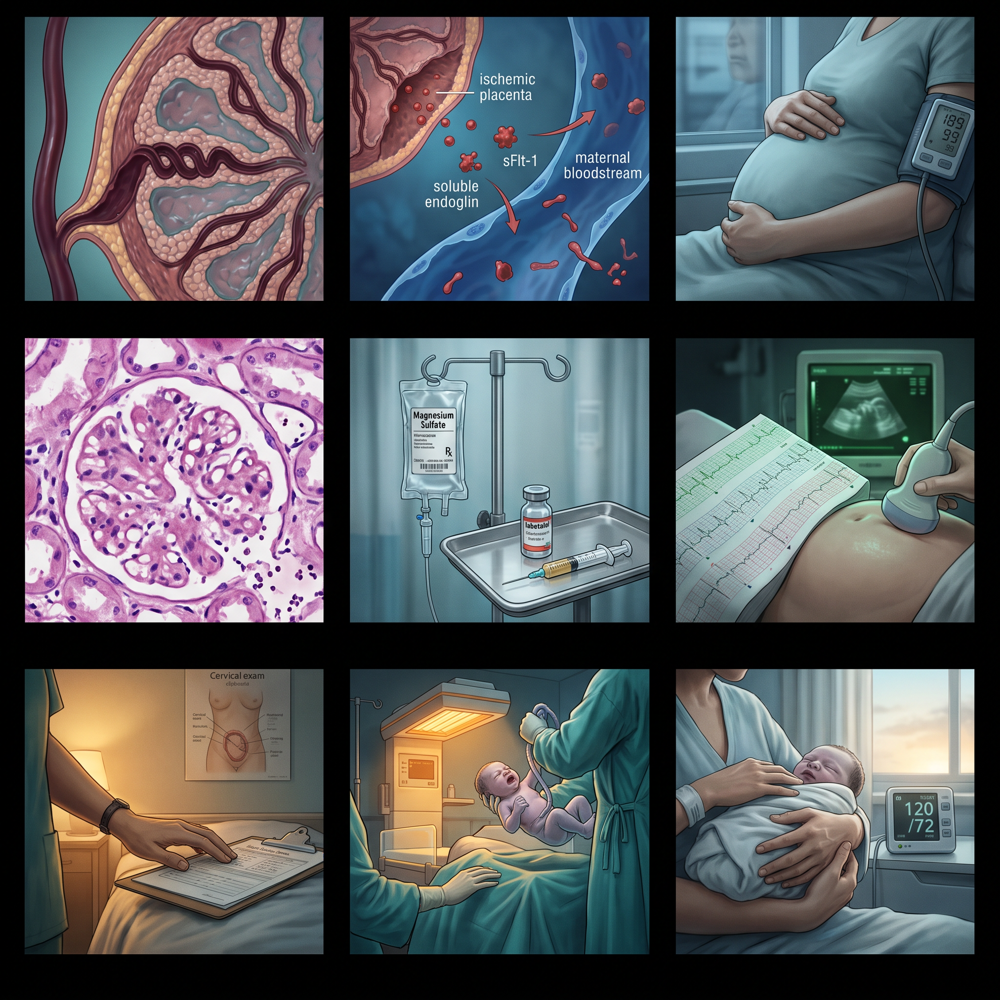
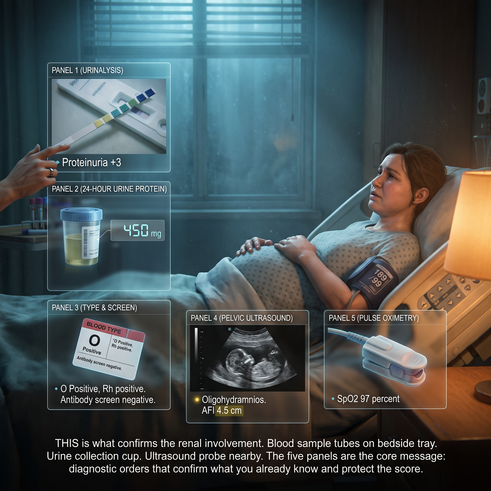
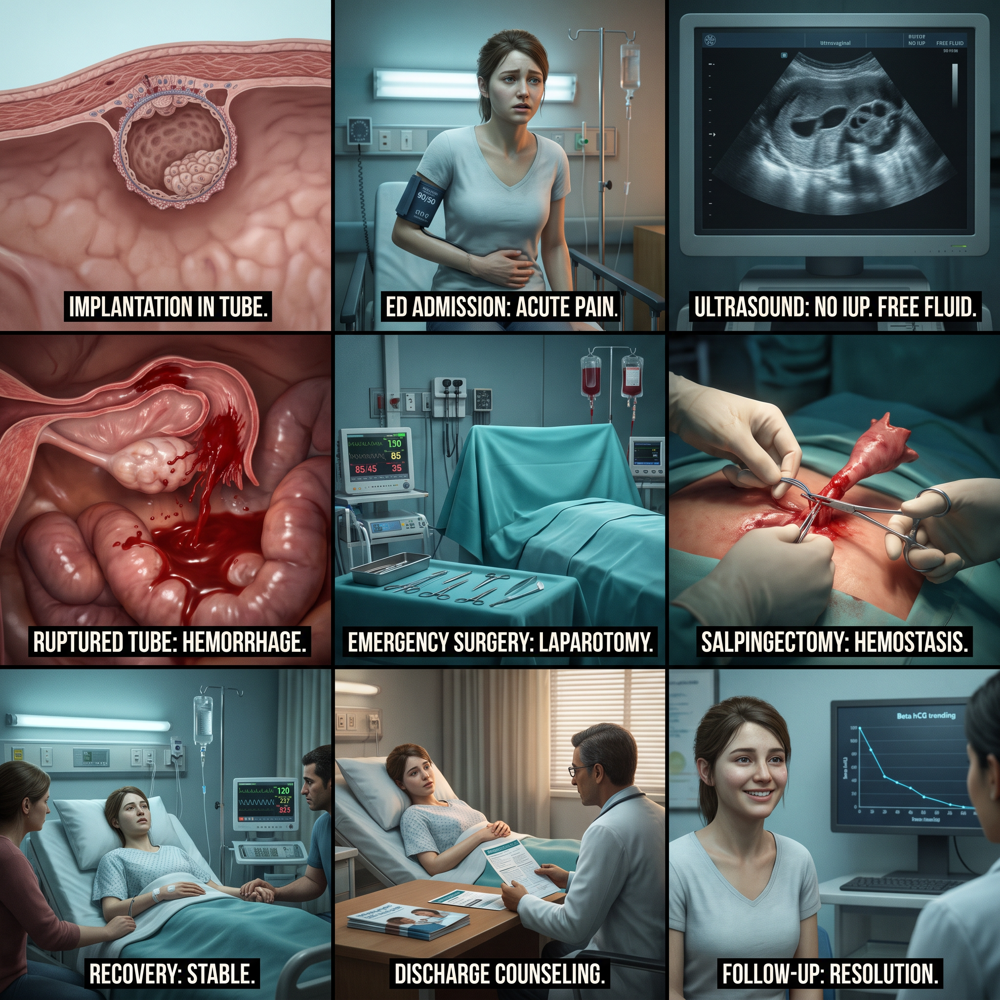
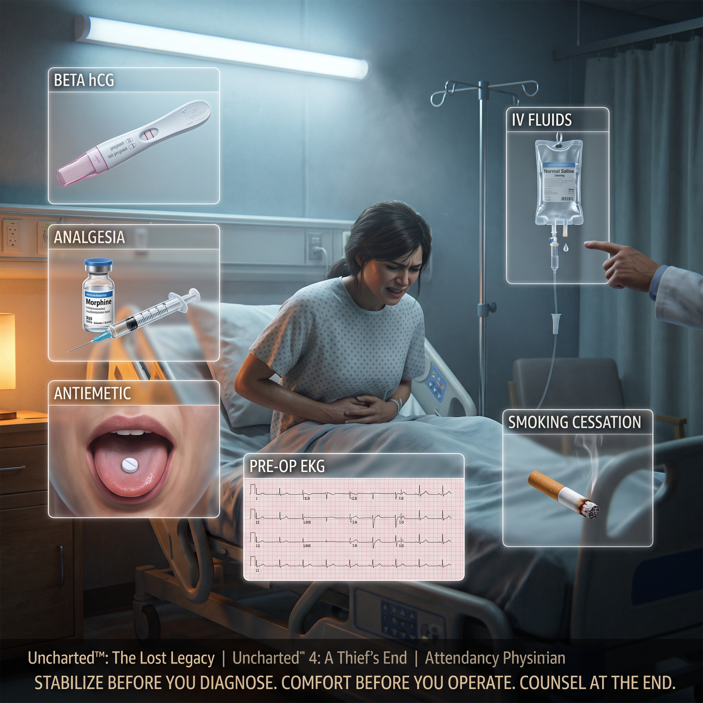
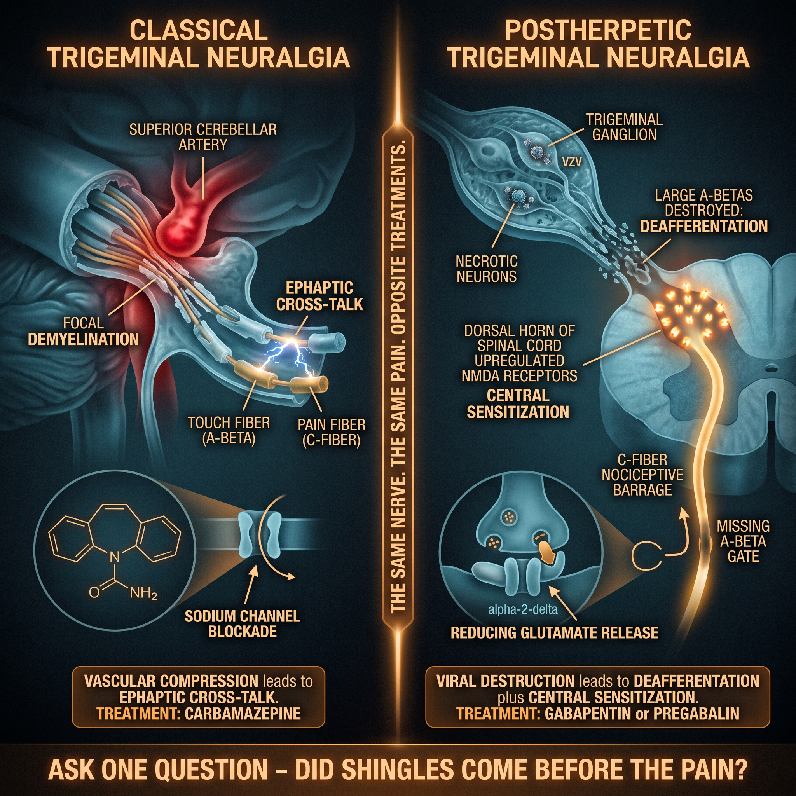
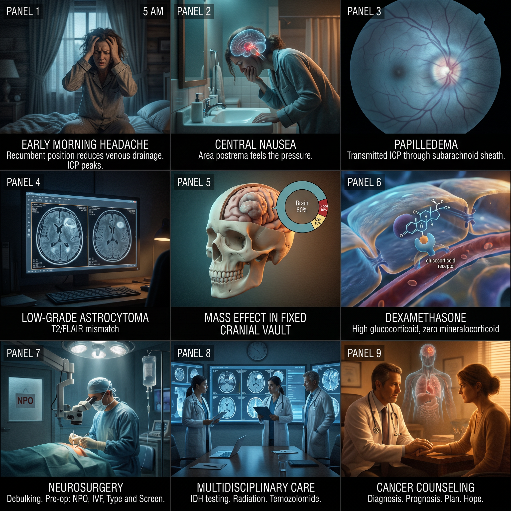
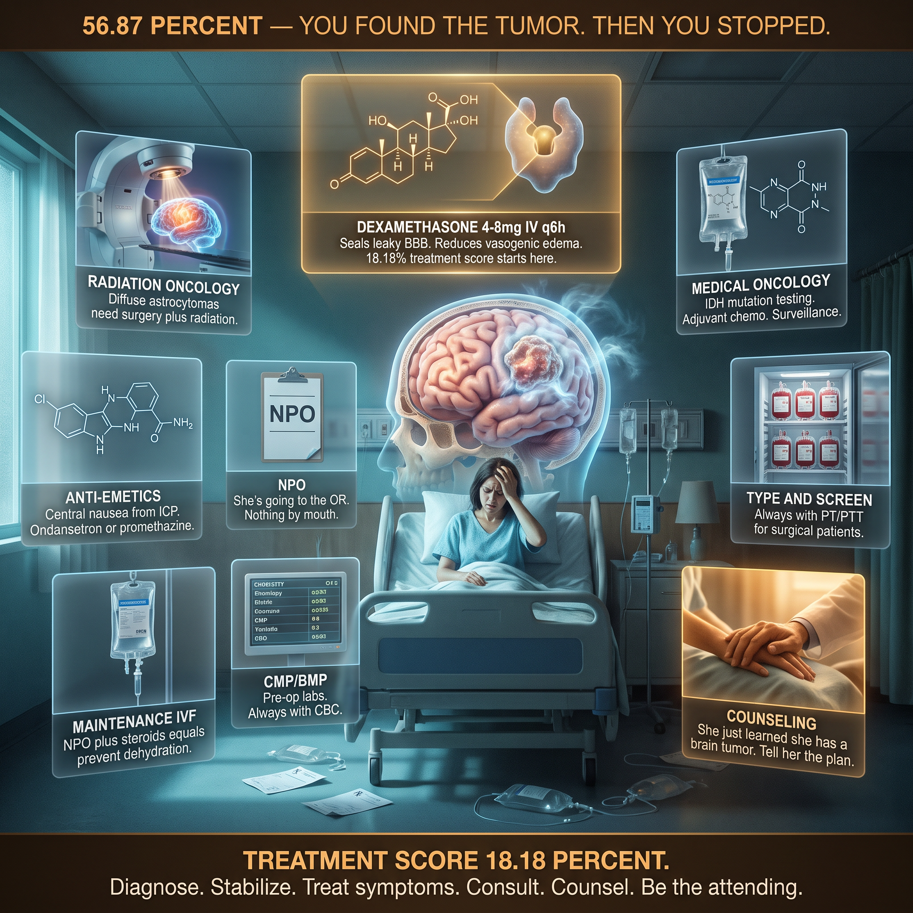

· 2026-07-23
Mucosal protein. ESR alone is insufficient — calprotectin + ESR together lock non-inflammatory.
Independent acute-phase reactant, different from ESR. Always pair with ESR in acute diarrhea.
HAV can present with diarrhea + abdominal pain. Standard acute diarrhea panel.
Free point. Every CCS smoker needs this.
Antibiotics in a smoker — adherence is a scoring item.


31-year-old male, business executive · 2026-07-23 | **Score:** 84.9% (Avg 81.7%) | **Patient:** 31-year-old male, business executive
Ulcerative colitis is a mucosal disease. The inflammation stays in the mucosa and submucosa. It never goes transmural. That's why UC doesn't cause fistulas or strictures — the muscular wall is intact.
But what UC lacks in depth, it makes up for in continuity. The inflammation starts at the rectum and marches proximally. No skip lesions. No normal patches in between. The entire affected segment is uniformly inflamed, friable, and bleeding.
The mucosa is the colon's absorptive surface. When it's inflamed, the colon can't absorb water. The stool is watery. When the mucosa is friable — so fragile that the scope touching it causes bleeding — every bowel movement scrapes open the surface. Blood mixes with stool. The patient sees it in the toilet.
This is the cardinal symptom of UC: bloody diarrhea. Not occult blood. Not melena. Fresh blood mixed with loose stool, multiple times a day.
Quick screen for toxic megacolon or gross pathology
Long-term IBD management
Ordered before treatment — should be last
- Colonoscopy confirmed UC
- Prednisolone for acute flare
- Mesalamine for maintenance
- IV fluids

Male, electric facial pain V2/V3, triggered by light touch · 2026-07-27 | **Score:** 82.5% (Avg 80.9%) | **Patient:** Male, electric facial pain V2/V3, triggered by light touch
Picture the trigeminal nerve as it exits the pons. Right where the nerve root leaves the brainstem and enters the prepontine cistern, the superior cerebellar artery loops directly over it. In 80-90% of trigeminal neuralgia cases, this artery compresses the nerve root entry zone.
The compression strips away myelin. Demyelinated axons fire ectopically. Worse: adjacent demyelinated axons form ephaptic connections — a signal in one axon jumps across to its neighbor. A light touch on the cheek (carried by a touch fiber) cross-fires into pain fibers. The brain experiences electric shock in the face from something as gentle as a breeze.
This is why carbamazepine works. It's a sodium channel blocker — it raises the threshold for action potential firing in demyelinated axons. It doesn't fix the compression. It just makes the nerve less trigger-happy.
The pain respects trigeminal distribution: V2 (maxillary) and V3 (mandibular) are most commonly affected. V1 (ophthalmic) is rarely involved alone. Your patient's pain was V2/V3 — the classic pattern.
Rule out infection causing facial pain. Basic screening.
Baseline chemistries. Carbamazepine can cause hyponatremia (SIADH) — you need a pre-treatment sodium level.
Rule out structural lesions (tumor, MS plaque, neurovascular compression). 80-90% of cases are from a vascular loop — you confirm it with imaging, not by guessing.
Carbamazepine immediately. First-line therapy. 100% on treatment. No negative patient updates. Correct location (office). Correct sequencing. Physical exam was appropriate — neuro exam was the right focus.


· 2026-07-26
Chlamydia trachomatis cannot make its own ATP. It is an energy parasite — it imports ATP from the host cell through a unique ADP/ATP translocase. This is why it must live inside host epithelial cells (urethral, cervical, conjunctival).
Life cycle:
- Elementary body (EB): The infectious form. Metabolically inert, tough cell wall. Attaches to host epithelium → endocytosed.
- Reticulate body (RB): Inside the inclusion vacuole, the EB reorganizes into the RB — metabolically active, replicating by binary fission.
- Elementary body reformation: RBs condense back into EBs → host cell lyses → EBs released to infect neighboring cells.
Azithromycin binds the 50S ribosomal subunit and blocks translocation of the growing peptide chain. Doxycycline binds the 30S subunit and blocks tRNA entry. Both halt protein synthesis — chlamydia cannot replicate without host ATP or its own proteins.


Chronic diarrhea, abdominal discomfort, Office setting · 2026-07-27 | **Score:** 79.53% | **Diagnosis:** Irritable Bowel Syndrome
IBD (Inflammatory Bowel Disease)
IBD is an immune-mediated destructive disease of the GI tract. The immune system attacks the bowel wall. There is tissue destruction — ulceration, transmural inflammation, granulomas, fibrosis, strictures, fistulas.
| Feature | Crohn's Disease | Ulcerative Colitis |
|---|---|---|
| Location | Mouth to anus (skip lesions) | Colon only (continuous) |
| Depth | Transmural (full thickness) | Mucosal/submucosal only |
| Histology | Granulomas, fissuring ulcers | Crypt abscesses, crypt distortion |
| Bleeding | Less common | Very common (bloody diarrhea) |
| Strictures/Fistulas | Yes | No |
| Smoking | Makes it worse | Protective (counterintuitive) |
| Surgery | Not curative | Curative (colectomy) |
What IBD looks like to the patient: Bloody diarrhea, weight loss, nocturnal symptoms (waking up to use the bathroom), fever, fatigue, extraintestinal manifestations (arthritis, uveitis, erythema nodosum, pyoderma gangrenosum, PSC).
What IBD labs show: Elevated ESR/CRP (inflammation), elevated fecal calprotectin (neutrophil migration into bowel lumen), anemia (iron deficiency from chronic blood loss, or anemia of chronic disease), hypoalbuminemia (protein-losing enteropathy), thrombocytosis (reactive).
What IBD imaging shows: Bowel wall thickening, mucosal hyperenhancement, creeping fat (Crohn's), comb sign (engorged vasa recta), strictures, fistulas, abscesses.
IBS (Irritable Bowel Syndrome)
IBS is NOT an immune-mediated disease. There is no tissue destruction. There are no ulcers, no granulomas, no strictures, no fistulas. The bowel looks normal under a microscope. The problem is functional — how the gut-brain axis processes signals.
The pathophysiology of IBS:...
Why it doesn't belong: IBS does not affect the urinary tract. The patient had no dysuria, frequency, urgency, flank pain, or hematuria. A UA in this context is a fishing expedition — it finds incidental bacteriuria or microscopic hematuria that leads to more tests, more anxiety, and no clinical yield.
The first-principles point: Don't order a test unless you have a pre-test probability and a plan for the result. If the UA shows nitrites and leukocyte esterase, are you treating asymptomatic bacteriuria? Guidelines say no. If it shows microscopic hematuria without risk factors, are you scoping the bladder? Guidelines say no. So why order it?
When UA is indicated: Dysuria, frequency, flank pain, fever with no clear source, suspected urosepsis, pregnancy screening, pre-op clearance, suspected glomerulonephritis.
The IBS patient had none of these.
Why it doesn't belong: Blood cultures are for detecting bacteria in the bloodstream — sepsis, endocarditis, osteomyelitis, line infections. IBS is not an infection. There is no fever, no rigors, no hypotension, no tachycardia, no leukocytosis, no bandemia. The patient has diarrhea in an office setting.
The first-principles point: Blood cultures cost money, take nursing time, and have a false-positive rate of approximately 3% — meaning 1 in 33 cultures grows a contaminant (usually coagulase-negative Staph from the skin). A false-positive blood culture leads to more antibiotics, more tests, longer stays, and harm. You don't draw them unless you believe there is bacteremia.
When blood cultures are indicated: SIRS/sepsis criteria (temp >38 or <36, HR >90, RR >20, WBC >12k or <4k or >10% bands), suspected endocarditis, suspected osteomyelitis, central line-associated infection, neutropenic fever, pyelonephritis requiring admission.
The IBS patient had none of these.
Why it doesn't belong: ESR (erythrocyte sedimentation rate) measures how fast RBCs fall in a tube over 1 hour. It's elevated in inflammation, infection, malignancy, autoimmune disease, pregnancy, obesity, and old age. It's normal in IBS. So why not order it? Because IBS is a clinical diagnosis. The Rome IV criteria require:
- Abdominal pain at least 1 day/week for 3 months
- Associated with ≥2 of: related to defecation, change in stool frequency, change in stool form
- Onset ≥6 months ago
If the patient meets Rome criteria and has NO alarm features (weight loss, nocturnal symptoms, blood per rectum, age >50 with new symptoms, family history of CRC/IBD/celiac), you don't need an ESR. You need a physical exam, a CBC, and a trial of therapy.
The trap with ESR in IBS: Let's say you order it and it comes back at 35 (slightly elevated, normal <20). Now what? You chase the ESR. You order CRP, ANA, RF, SPEP, maybe even a temporal artery biopsy if the patient is over 50. You find nothing. The ESR was mildly elevated because the patient is female (females have higher ESR), or takes oral contraceptives, or is slightly overweight. You've done $3,000 in tests chasing a lab value that was never going to help you.
The first-principles punchline: In IBS, the ESR is expected to be normal. If it's elevated, you now have a different problem — you have to find out why. Don't create that problem for yourself.
- CBC, BMP, TSH — ruling out anemia, electrolyte abnormalities, hyperthyroidism (causes diarrhea)
- Stool studies — culture, ova/parasites, WBC, C. diff, FOBT — comprehensive infection and cancer screen
- Celiac serology — tTG-IgA is the right test for celiac disease
- Sigmoidoscopy — visualizing the colonic mucosa to rule out IBD, microscopic colitis
- CT abdomen/pelvis — structural assessment
- Lactose tolerance test — lactose intolerance is a common IBS mimic
- Treatment — fiber, loperamide (antidiarrheal), dicyclomine (antispasmodic), dietary education, follow-up


· July 27, 2026
The placenta is not a passive organ. It's an invasive trophoblastic graft.
Normal placentation requires cytotrophoblast invasion of the maternal spiral arterioles, converting them from high-resistance muscular vessels into low-resistance, high-flow sinusoidal channels. This happens by week 20. When it fails, the spiral arteries remain narrow, high-resistance, and reactive - and the placenta becomes progressively hypoperfused.
Stage 1 (abnormal placentation): Incomplete trophoblast invasion of spiral arteries. This is silent, mechanical, happens by mid-pregnancy.
Stage 2 (placental ischemia): The under-perfused placenta releases anti-angiogenic factors into maternal circulation - most critically soluble fms-like tyrosine kinase-1 (sFlt-1) and soluble endoglin (sEng). sFlt-1 binds and neutralizes VEGF and PlGF (placental growth factor). Soluble endoglin blocks TGF-beta signaling in the maternal endothelium.
Stage 3 (systemic endothelial dysfunction): Without VEGF/PlGF maintenance signals, the maternal vascular endothelium becomes leaky, activated, and dysfunctional. This is the clinical stage:
- Vasospasm: Endothelin dominates over NO/prostacyclin. Systemic vasoconstriction. BP 189/99.
- Capillary leak: Albumin escapes into interstitium. Facial edema. Pulmonary edema if severe.
- Glomerular endotheliosis: The renal glomerulus swells - endothelial cells proliferate, capillaries narrow. Proteinuria (>300 mg/24h). Creatinine rises.
- Cerebral autoregulation failure: Hypertension overcomes cerebral autoregulatory capacity. Vasogenic edema. Headache. Visual scotoma. Risk of posterior reversible encephalopathy syndrome (PRES). Risk of eclampsia.
- HELLP spectrum: If microvascular thrombosis dominates - hemolysis, elevated liver enzymes, low platelets. RUQ pain from hepatic sinusoidal obstruction and Glisson capsule stretch.
Severe features (present here):...
Proteinuria is the classic end-organ marker of pre-eclampsia. A spot urine protein/creatinine ratio >= 0.3 or 24-hour urine protein >= 300 mg confirms the renal manifestation of glomerular endotheliosis.
Why it matters: The BP + headache + blurry vision are enough to diagnose severe pre-eclampsia. But documenting proteinuria closes the diagnostic loop and rules out mimics (chronic HTN without pre-eclampsia, gestational hypertension). It also establishes baseline renal involvement - if creatinine rises later, you know it's progression, not a new problem.
You ordered PT/PTT correctly. But type and screen is the other half of the pre-op coagulation panel. She's 33 weeks, heading toward delivery - possibly emergent cesarean. You need to know her blood type, Rh status, and antibody screen before she's on the table.
Why it matters: Rh-negative mothers need RhoGAM within 72 hours of delivery. Unexpected antibodies mean cross-matched blood takes longer. This is a 30-second order that prevents a crisis in the OR.
Transabdominal then transvaginal ultrasound. At 33 weeks with severe pre-eclampsia, the fetus is at risk for:
- Oligohydramnios (uteroplacental insufficiency reduces fetal renal perfusion and urine output)
- Intrauterine growth restriction (IUGR - chronic placental hypoperfusion)
- Abnormal umbilical artery Dopplers (absent or reversed end-diastolic flow signals decompensation)
Why it matters: The ultrasound determines delivery timing. If there's IUGR with abnormal Dopplers, delivery is urgent even at 33 weeks. If fetal status is reassuring, you have time for the full 48-hour betamethasone course.
The CCS algorithm expects pulse ox on nearly every patient. This one is low-yield medically in an otherwise stable pre-eclamptic without respiratory complaints, but clinically it's a habit: O2 saturation is a vital sign. If pulmonary edema develops (a severe feature), you need a baseline.
You placed 11 orders. The average high-scorer places 27. You were 1.58 standard deviations below the mean. This is not a clinical failure - it's efficiency. You recognized the emergency and moved to treatment. But the CCS scoring algorithm weights diagnostic orders at 40% of total score. Even when you know the diagnosis, you must demonstrate the workup.
The fix: After your physical exam, run the standard pre-eclampsia lab panel: CBC, BMP, LFTs, urinalysis, 24-hour urine protein, type and screen. Then ultrasound. Then deliver. The extra orders add 2 minutes of clicking and protect 30% of your score.


26-year-old woman · 2026-07-23 | **Score:** 76.4% (Avg 86.9%) | **Patient:** 26-year-old woman
Every menstrual cycle produces a corpus luteum after ovulation. That structure is a temporary endocrine organ. It's supposed to be richly vascularized — it's pumping out progesterone to maintain a potential pregnancy. The vessel walls are thin, newly formed, and fragile.
Sometimes — no clear trigger, though anticoagulation and trauma raise the odds — one of those vessels tears. Blood spills directly into the peritoneal cavity. There's no tamponade here. The peritoneum is an open space. She bleeds until the pressure drops enough to slow the flow, or until you stop it.
The right ovary ruptures more often than the left. Nobody knows exactly why — anatomy, angulation, differential blood supply — but it means right-sided pain in a woman with free fluid can fool you into thinking appendix.
The diagnostic fork between ectopic and cyst rupture
No blood available before OR
Fluids buy time but don't carry oxygen
Pain control — NSAIDs contraindicated
Simple, non-invasive, missed
Required for any surgical patient
- Fluids, labs, OR consult
- PT/PTT for pre-op


28F, 32 weeks pregnant · 2026-07-23 | **Score:** 76.0% (Avg 76.9%) | **Patient:** 28F, 32 weeks pregnant
The growing uterus is a physical force. It starts in the pelvis. By 32 weeks, the fundus reaches the xiphoid. Everything in its path gets compressed and displaced.
The appendix, normally hanging off the cecum in the RLQ, gets pushed superiorly and laterally. The omentum — which would normally wall off an inflamed appendix — gets stretched thin and displaced upward. It can't reach the appendix to contain the infection. So appendicitis in pregnancy perforates faster and spreads more diffusely than in a non-pregnant patient.
At the same time, the physiologic leukocytosis of pregnancy (up to 15,000) masks the WBC elevation you'd normally rely on. The nausea and vomiting are already baseline pregnancy symptoms. The diagnosis hides behind normal pregnancy physiology.
Co-management for fetal monitoring
Pain control — NSAIDs contraindicated in 3rd trimester
Nausea and vomiting untreated
Pre-op blood availability
Pre-op cardiac clearance
- Fetal Doppler monitoring
- Surgery consult → appendectomy
- IV fluids, pre-op labs


Woman of childbearing age, unprotected sex, smoking, binge drinking, infertility history · July 27, 2026
The embryo implants where it should not
A fertilized ovum normally travels through the fallopian tube to implant in the endometrial lining of the uterine fundus. In ectopic pregnancy, the blastocyst implants outside the uterus — 95% of the time in the ampulla of the fallopian tube.
Why the tube? Tubal factors slow the embryo's transit: scarring from PID (especially chlamydia), previous tubal surgery, or congenital abnormalities. The embryo is developmentally programmed to implant when it reaches the blastocyst stage. If it's still in the tube at that point, it implants there.
What happens next: The trophoblast invades the tubal wall. Unlike the thick, vascular endometrium designed for placentation, the tubal wall is thin and poorly supported. As the embryo grows:
- The tube stretches, causing dull unilateral pain.
- The trophoblast erodes into tubal blood vessels. Vaginal bleeding begins.
- Eventually, the tube ruptures. Arterial blood spills into the peritoneal cavity.
Why rupture is catastrophic: The blood is arterial (from tubal branches of the uterine and ovarian arteries), not venous. It accumulates in the peritoneal cavity, which can hold liters. There is no external bleeding to warn you. The patient can exsanguinate internally while looking pale but stable — until they crash.
Risk factors (all present here):
- Unprotected sex
- Smoking (impairs tubal motility via nicotine-induced ciliary dysfunction)
- Binge drinking (associated with risky sexual behavior, PID)
- Infertility history (suggests underlying tubal pathology)
The clinical triad: Amenorrhea (missed period) + unilateral pelvic pain + vaginal bleeding. But only 50% of patients present with all three. The pregnancy test is the great equalizer: any reproductive-age woman with abdominal pain gets a beta hCG.
You cannot diagnose an ectopic pregnancy without confirming pregnancy. The CCS algorithm expects a urine or serum pregnancy test on EVERY reproductive-age woman with abdominal pain, even before the ultrasound.
Why it's first: The positive pregnancy test + empty uterus on ultrasound + free fluid = ruptured ectopic until proven otherwise. You had the ultrasound and made the right call, but the algorithm penalizes missing the pregnancy test step.
The patient had abdominal rigidity and guarding. That's peritoneal irritation from intra-abdominal blood. She's losing volume into her peritoneal cavity. Two large-bore IVs with crystalloid (NS or LR) are the first intervention in any hemorrhaging patient.
Why it's urgent: Her vitals were stable but the CCS narrative says "her vitals will worsen if she is not immediately cared for." You have a window. Fluid resuscitation buys time for the surgeon to get to the OR.
The score report explicitly says: "The patient is having severe pain which should be treated." Hydromorphone, fentanyl, or morphine. NSAIDs are avoided (platelet inhibition before surgery), but opioids are standard of care.
The clinical principle: Treat pain in parallel with the workup, not after. A patient in severe pain cannot give a reliable history, and severe pain is itself a physiologic stressor (tachycardia, hypertension, splinting).
Ondansetron, promethazine, or metoclopramide. The patient is nauseated from peritoneal irritation, pain, and anxiety. Untreated nausea increases aspiration risk if she needs emergent intubation. Simple, fast, low-risk.
The patient is going to the OR. Every surgical patient needs a pre-operative EKG. Baseline rhythm, ischemia, QT interval (which affects anesthesia drug choice).
Smoking impairs tubal ciliary function — it's a direct risk factor for the ectopic pregnancy she just had. She needs to hear this while she's in the hospital, not in a brochure at discharge.
Ordering STI testing was correct. Ordering it before you had stabilized, diagnosed, and treated the patient was a timing error, not a content error.


30-year-old male, forest ranger · 2026-07-23 | **Score:** 73.3% | **Patient:** 30-year-old male, forest ranger
Crohn's is not a mucosal disease. It's transmural. The inflammation goes all the way through the bowel wall, from mucosa to serosa. That's why the complications are different from ulcerative colitis.
Fistulas happen because the inflammation tunnels through. The inflamed terminal ileum sits next to the bladder, the sigmoid, the psoas muscle. The inflammatory process bores through the muscularis propria, creates a tract, and connects two epithelial surfaces that were never meant to touch. Entero-enteric, enterovesical, enterocutaneous — these are just descriptions of where the tunnel surfaced.
Strictures happen because the transmural inflammation heals with fibrosis. Every flare lays down collagen. Over years, the lumen narrows. Not from active inflammation — from scar. Anti-inflammatory drugs won't open a fibrotic stricture. That's why you screen with imaging, not just scopes.
Skip lesions happen because Crohn's is segmental. The inflammation doesn't flow continuously along the bowel like UC does. It skips. Normal mucosa sits right next to ulcerated mucosa. This is the hallmark that separates Crohn's from UC on endoscopy.
Terminal ileum absorbs iron — ferritin drops before Hgb
Ileal disease impairs B12 absorption
Chronic inflammation + poor intake
Baseline inflammation markers
Ruled out infectious etiology
Smoking worsens Crohn's — modifiable risk factor
- Budesonide started
- Full exam including rectal (caught the skin tags)


· 2026-07-26
The prostate is a lipid-rich gland with a pH gradient (acidic prostatic fluid vs alkaline plasma). Drug penetration depends on:
- Lipid solubility — must cross the prostatic epithelium
- pKa — must remain non-ionized in both plasma and prostatic fluid
- Protein binding — lower binding = more free drug
Fluoroquinolones (ciprofloxacin) and TMP-SMX meet all three criteria. Beta-lactams (amoxicillin, Augmentin) have poor lipid solubility and poor prostate penetration once acute inflammation resolves. Nitrofurantoin achieves bladder concentrations only — it never reaches prostate tissue, regardless of culture sensitivity.
Duration: 14-28 days. The prostate is a sanctuary site — shorter courses relapse.

Recent MI survivor, now on DAPT + beta-blocker + statin · 2026-07-25 | **Score:** 68.33% (Avg 66.2%) | **Patient:** Recent MI survivor, now on DAPT + beta-blocker + statin
During a myocardial infarction, cardiomyocytes die. Their intracellular contents — cardiac antigens that the immune system has never seen in the extracellular space — spill out. The immune system encounters these antigens. It mounts a response.
Days to weeks later, that response finds its way to the pericardium. The pericardium shares antigenic epitopes with the myocardium. Antibodies and immune complexes deposit in the pericardial layers. Complement activates. Neutrophils infiltrate. The pericardium becomes inflamed, edematous, and exquisitely painful.
This is Dressler syndrome — or, if it happens earlier (days rather than weeks), peri-infarct pericarditis. The mechanism is the same: autoimmune inflammation driven by exposure to cardiac antigens. It is NOT infectious. It is NOT ischemic. It is the immune system doing what the immune system always does when exposed to novel antigens — it attacks. It just happens to be attacking the tissue surrounding the heart instead of the bacteria it was designed to fight.
The pain is sharp, pleuritic. It's worse when lying supine because the inflamed pericardium stretches against the posterior chest wall. It improves when sitting forward because the pericardium relaxes and the inflamed layers separate slightly. Positional chest pain is pericarditis until proven otherwise.
Post-MI patient with new chest pain. Rule out re-infarction first. Troponin tells you if there's active myocardial necrosis. Pericarditis alone can cause mild elevation, but a significant rise changes management.
Ruled out pneumothorax, widened mediastinum, pleural effusion. Pericarditis can produce a pericardial effusion — CXR shows an enlarged cardiac silhouette if present.
Recent cardiac cath = infection risk. Leukocytosis suggests infectious pericarditis, not autoimmune.
Basic labs for any admission. Renal function matters for drug dosing.
Activity re-triggers pericarditis symptoms. Advise rest until symptoms resolve.
You saw the diffuse ST elevation and PR depression and knew it was pericarditis, not a STEMI. You correctly avoided every NSAID on the list — that's the single most important clinical decision in this case and you nailed it. You gave aspirin (antiplatelet, safe) and acetaminophen. You continued the patient's post-MI medications. No inappropriate orders. Timing, location, sequencing all 100%.


· July 27, 2026
Varicella-zoster virus (VZV) does not leave the body after chickenpox.
After primary infection (chickenpox), VZV travels retrogradely along sensory nerves to the dorsal root ganglia and cranial nerve ganglia, where it enters latency. The viral genome persists as circular episomal DNA inside the neuronal cell body. The host immune system (specifically VZV-specific CD8+ T cells) keeps it suppressed for decades.
Reactivation: the dermatomal march
When cell-mediated immunity wanes (age, stress, immunosuppression), VZV reactivates. It travels anterogradely down the sensory nerve to the skin, producing the characteristic dermatomal vesicular rash. The trigeminal ganglion is the most commonly affected cranial nerve ganglion, with the ophthalmic division (V1) most frequently involved.
The pain comes from two distinct mechanisms
Acute herpetic neuralgia (the rash phase):
- Direct viral cytolysis of keratinocytes
- Inflammatory infiltrate in the dorsal root ganglion
- Hemorrhagic necrosis of the ganglion
- Nociceptor sensitization from local prostaglandins, bradykinin, cytokines
Postherpetic neuralgia (PHN) - pain persisting >90 days after rash resolution:
- Deafferentation pain. The virus destroys large myelinated A-beta fibers. These fibers normally gate pain transmission in the dorsal horn (Melzack and Wall's gate control theory). When A-beta fibers are lost, the gate stays open. C-fiber nociceptive input flows unimpeded to the thalamus.
- Central sensitization. Persistent nociceptive barrage upregulates NMDA receptors in the dorsal horn. The spinal cord becomes hyperexcitable. Non-painful stimuli (allodynia) now trigger pain.
- Ectopic pacemakers. Damaged nerve endings and the cell body in the ganglion develop spontaneous ectopic discharges. Sodium channels (Nav1.7, Nav1.8) accumulate at the injury site, lowering the threshold for spontaneous firing....
Score impact: 66.67% on treatment (treated but suboptimal) You ordered medication, and it was accepted. But CCS deducted points because you did not order gabapentin/pregabalin first. Here's the reasoning: This patient had a herpes zoster outbreak that injured CN V. The timeline (pain starting after shingles) makes this postherpetic neuralgia, not classical trigeminal neuralgia. The distinction matters because:
- Classical trigeminal neuralgia: vascular compression → focal demyelination → ephaptic cross-talk → carbamazepine
- Postherpetic neuralgia: viral ganglion destruction → A-beta fiber loss → central sensitization → gabapentin/pregabalin
The treatment hierarchy for PHN:
By ordering carbamazepine (or another anti-seizure medication that's not first-line for PHN), you got partial credit but lost points for not choosing the evidence-based first-line agent.
The capsacin cream prescribed by urgent care was also anterior treatment: topical capsaicin depletes substance P from C-fiber terminals, reducing nociceptive transmission. It's adjunctive, not primary therapy.
Score impact: Diagnostic orders 42.86% The CCS algorithm wants you to rule out acute infection as a cause of symptoms. While shingles and PHN are post-infectious (not acute infection), CBC is a screening lab expected in nearly every CCS case. In postherpetic neuralgia specifically, you want to check for leukocytosis that might suggest ongoing active zoster rather than resolved PHN, or a secondary bacterial infection of the healed rash site.
Score impact: Diagnostic orders 42.86% Chemistries are standard screening labs. In a patient with PHN being started on gabapentin (renally cleared) or TCAs (cardiotoxic in overdose, metabolized hepatically), baseline renal and hepatic function are prudent. Additionally, electrolyte abnormalities (particularly calcium, magnesium) can cause or exacerbate neuropathic symptoms.

62M professor, 30 pack-years, EF 35% · 2026-07-25 | **Score:** 64.91% (Avg 70.2%) | **Patient:** 62M professor, 30 pack-years, EF 35%
The Frank-Starling mechanism is the heart's fundamental contractile law: within physiologic limits, the more the ventricular muscle is stretched during diastole, the more forcefully it contracts during systole. More venous return = more stretch = more stroke volume. This works because stretching the sarcomere increases the overlap between actin and myosin filaments, generating more cross-bridge cycling and more force.
In systolic heart failure, the problem is that the pump cannot generate enough force regardless of how much it is stretched. The Starling curve has shifted downward and rightward. At any given filling pressure, the stroke volume is lower than normal. The ventricle dilates to compensate — more preload, more stretch, more volume — but the failing myocardium cannot convert that stretch into effective contraction. The ejection fraction drops below 40%.
The kidneys sense the reduced forward flow and respond exactly as they should in hypovolemia: they activate the renin-angiotensin-aldosterone system. Angiotensin II vasoconstricts. Aldosterone retains sodium and water. The intravascular volume expands. But the heart cannot pump this expanded volume forward. It backs up.
The backward failure explains every symptom this patient has. Fluid accumulates in the pulmonary interstitium — first in the dependent bases during the day, then throughout the lungs when he lies flat at night. The interstitial fluid compresses small airways and activates J-receptors, creating the sensation of dyspnea. When the interstitial pressure exceeds the capacity of the pulmonary lymphatics, fluid transudes into the alveoli and pleural space — Kerley B lines and pleural effusion on CXR....
Pillar 2 of GDMT. 34% mortality reduction. Start predischarge after euvolemia achieved.
Pillar 4 of GDMT. 25% reduction in worsening HF/CV death. Class I. Can start inpatient.
Prior MI = secondary prevention. Independent of LDL. High-intensity only.
K+ and eGFR must be checked before spironolactone. You ordered the MRA without checking if it was safe.
Ischemic cardiomyopathy patient with new decompensation — rule out acute ischemia as trigger.
Location 50%. This cannot be managed in the office.
Lifestyle is part of GDMT. Smoking caused the CAD that caused the MI that caused the HF.
CHF + smoking = high risk. Non-negotiable.
Routine preventive and screening
Furosemide IV — correct loop diuretic for volume overload. Spironolactone — correct MRA for EF 35%. Echocardiogram confirmed the diagnosis. CXR showed the typical findings. Physical exam covered the right systems — extremities for edema, HEENT for JVD, heart and lungs. You correctly avoided stress testing during acute decompensation. Treatment 66.67% is solid.


· 2026-07-25 | **Score:** 64.12% (Avg 79.8%) | **Diagnosis:** Type A Aortic Dissection
The aortic wall has three layers: intima (thin endothelial lining), media (thick smooth muscle and elastin), and adventitia (outer connective tissue). The media is the structural layer. Chronic hypertension damages it — smooth muscle cells degenerate, elastin fibers fragment, and the wall weakens.
A dissection begins with an intimal tear. Blood at systemic pressure (180 mmHg systolic in this patient) enters through the tear and splits the media longitudinally. This creates two lumens: the true lumen (original) and the false lumen (blood dissecting through the media).
The force driving the dissection forward is dP/dt — the rate of pressure rise in the left ventricle during systole. It's not just the absolute pressure. It's how fast the pressure hits the aortic wall. Each heartbeat is a hammer blow tearing the flap further down the aorta.
When the dissection involves the ascending aorta, it's Type A (Stanford classification). This is lethal for three reasons:
- Retrograde propagation into the coronary ostia — the dissection flap covers the coronary artery openings → myocardial infarction (not plaque rupture, mechanical occlusion)
- Disruption of the aortic valve — the flap undermines the commissures where the valve cusps attach → acute aortic regurgitation (the new diastolic murmur)
- Rupture into the pericardium — blood dissects through the adventitia into the pericardial sac → cardiac tamponade → death
This patient already had aortic regurgitation. The valve was already involved. Tamponade was the next step.
The entire treatment. Type A = OR. Never ordered.
Pain unchecked → sympathetic surge → dP/dt rises → dissection propagates
Minor — oxygenation check in distressed patient
- Echo showing type A dissection with AR
- Troponin 0 — not ACS
- Correctly avoided aspirin
- Beta-blocker + nitroglycerin for BP control
- PT/PTT, type/screen, IV access — pre-op prep
- Moved out of ED (thought process was right)


35-year-old male, accountant · 2026-07-23 | **Score:** 63.8% (Avg 62.1%) | **Patient:** 35-year-old male, accountant
The liver has 500 functions. When it fails, only two matter acutely:
1. Detoxification. The liver clears ammonia, bilirubin, drugs, and toxins from the portal circulation. When hepatocytes die, ammonia accumulates. Ammonia crosses the blood-brain barrier and impairs astrocyte function. Neurons can't maintain their resting potential. Confusion, asterixis, then coma. This is hepatic encephalopathy.
2. Synthetic function. The liver makes albumin, clotting factors (II, VII, IX, X — vitamin K-dependent), and complement. When synthesis fails, albumin drops → third-spacing and edema. Clotting factors drop → coagulopathy. INR rises. The patient can bleed from anywhere.
AST 3117, ALT 2362 tell you the degree of hepatocyte necrosis. These enzymes live inside hepatocytes. When the cell membrane ruptures, they spill into the blood. The higher the number, the more cells dying per minute. These are not "slightly elevated." These are "the liver is being dismantled in real time."
Total bilirubin 23.7 tells you the liver has lost its ability to conjugate and excrete bilirubin. Direct bilirubin is high because the hepatocytes can't pump it into bile. Indirect bilirubin is high because the surviving hepatocytes are overwhelmed. Jaundice at 23.7 is deep — the sclerae are mustard, the skin is saffron. This patient looks like a highlighter.
Must rule out APAP toxicity in any patient with AST/ALT in thousands
Synthetic liver function — guides prognosis and transfusion
Synthetic function marker
Fever + aspiration pneumonia → rule out bacteremia
Piperacillin/tazobactam or ceftriaxone + metronidazole
Life-saving antidote for acetaminophen toxicity
- CBC, CMP, LFTs, ABG
- CXR showed aspiration pneumonia
- Ondansetron, IV fluids, oxygen


· 2026-07-26
Pasteurella multocida (cat oral flora — always present)
Pasteurella lives in the oropharynx of 70-90% of cats. It is a Gram-negative coccobacillus that uses a virulence polysaccharide capsule to resist phagocytosis. When inoculated deep into tissue by a cat's needle-sharp teeth, it causes a rapidly progressive cellulitis within 12-24 hours -- one of the fastest onsets of any bite pathogen.
Why Pasteurella matters: If a cat bite looks infected at 24 hours, it is almost certainly Pasteurella. Ampicillin and beta-lactams cover it well. But Pasteurella is never alone in a bite that sat for three days.
Pseudomonas aeruginosa (secondary invader — environment)
Pseudomonas is not normal cat oral flora. It is an environmental organism (soil, water, sinks, hospital drains) that enters wounds secondarily. In this case, the 3-day delay, moist wound conditions, and necrotic tissue created a perfect Pseudomonas niche.
The green color comes from pyocyanin — a blue-green phenazine pigment that Pseudomonas produces through the Phz operon. Pyocyanin is not just cosmetic. It is a virulence factor: it generates reactive oxygen species that damage host tissue, impairs ciliary function, and inhibits lymphocyte proliferation.
Why you MUST cover Pseudomonas here: The green discharge signals Pseudomonas colonization. If you pick Augmentin (amoxicillin-clavulanate) — the most common "cat bite antibiotic" — you will fail. Pseudomonas has intrinsic resistance to amoxicillin-clavulanate through three mechanisms:
- Chromosomal AmpC beta-lactamase — not inhibited by clavulanate
- Low outer membrane permeability — beta-lactams cannot penetrate
- Efflux pumps (MexAB-OprM) — actively expels drugs that do get in
This is why pip-tazo works: piperacillin is a strong enough beta-lactam to overcome efflux, AND tazobactam irreversibly inhibits AmpC.
Bacteroides fragilis (anaerobe — oral flora)...


2-year-old boy · 2026-07-23 | **Score:** 62.14% (Avg 69.9%) | **Patient:** 2-year-old boy
Lead is a metal that nature never intended to be inside a human body. But it looks enough like calcium, zinc, and iron that the body's machinery can't tell the difference.
Picture a heme synthesis factory. Two stations:
Station 1 — ALA dehydratase. This enzyme needs zinc. Lead slides into the zinc-binding pocket because its ionic radius is close enough. The enzyme stops working. ALA — the intermediate substrate — accumulates. You can measure it in urine. It's an indirect sign that lead has shut down this station.
Station 2 — Ferrochelatase. The final step. Iron must be inserted into the protoporphyrin ring to make heme. Lead displaces iron at this step. Iron is right there, available, but the door is locked. Free erythrocyte protoporphyrin (FEP) skyrockets. The RBC comes out microcytic — low MCV — even though iron stores are present.
So you have a microcytic anemia that looks like iron deficiency, but it isn't. The iron is there. It just can't get into the ring.
Now the basophilic stippling. This is the pathognomonic finding. Lead also inhibits pyrimidine 5'-nucleotidase. Ribosomes — the protein factories inside the RBC — fail to degrade properly. They clump. Under the microscope, you see coarse blue dots scattered through the red cell. Iron deficiency never does this. If you see basophilic stippling in a microcytic anemia, you are looking at lead toxicity until proven otherwise.
GI lead chips before chelation — critical miss
Cerebral edema with encephalopathy
Clenches the diagnosis at 80 mcg/dL
Coexisting deficiency, hold iron during BAL
Seizure control — benzos first-line
Stayed in ED too long
0% on prevention
- IV fluids
- Full exam
- CBC showed basophilic stippling


Pediatric, found submersed, pulseless, apneic, hypothermic · July 27, 2026
The Pathophysiology Chain
- Submersion → breath-holding → laryngospasm. The first thing that happens is not aspiration. It's involuntary breath-holding followed by laryngospasm. The glottis slams shut. For 30-90 seconds, no water enters the lungs. But no air enters either. Oxygen falls. CO₂ rises.
- Hypoxic loss of consciousness → laryngospasm breaks. When the brainstem can no longer sustain the spasm, the glottis relaxes. Water enters the airway. The patient aspirates.
- Aspiration → surfactant washout → alveolar collapse. Water in the alveoli dilutes and washes out surfactant. Without surfactant, alveoli collapse at end-expiration. The lung stiffens. Compliance drops. Ventilation-perfusion mismatch explodes. This is ARDS in fast-forward.
- Hypoxemia → bradycardia → cardiac arrest. The heart of a child is oxygen-dependent. An adult heart can run on its own reserves for a few minutes. A child's heart cannot. When PaO₂ drops below about 30 mmHg, the myocardium fails. Bradycardia is the pre-terminal rhythm. Asystole follows. This is why PALS says: if the heart rate is below 60 with poor perfusion, start CPR. You do not wait for asystole. Bradycardia in a hypoxic child IS a cardiac arrest.
- Cold water → hypothermia → cold diuresis → volume depletion. Cold water immersion triggers peripheral vasoconstriction, shunting blood centrally. The hypothalamus perceives this as volume overload — atrial stretch receptors fire. ADH release is suppressed. The kidneys dump water. The patient becomes hypovolemic despite drowning.
- Pulmonary edema on CXR. The "drowning lung" on chest X-ray shows diffuse, homogeneous infiltrates. Lung markings blur. Heart borders disappear into the edema. This is direct alveolar injury from aspirated water combined with surfactant dysfunction. It is indistinguishable from ARDS on imaging.
- Warming blanket — external rewarming
- ECG — recognized the need to check cardiac rhythm
- CBC + CMP/LFT — baseline labs in an emergency
- Physical exam triage — general appearance, chest/lungs, CV, abdomen, etc. — but these should come AFTER the initial resuscitation
- Perfect timing — no negative updates before treatment
- No inappropriate invasive orders
- Correct sequencing


45-year-old female, fever, malaise, substance use history · 2026-07-27 | **Score:** 60.33% | **Diagnosis:** Infective Endocarditis
The Endocarditis Cascade
- Endothelial injury opens the door. IV drug use introduces particulate matter (talc, cotton fibers, bacteria) directly into venous circulation. These particles strike the tricuspid valve. The endothelium is damaged. Platelets and fibrin deposit at the injury site. This is the nonbacterial thrombotic endocarditis (NBTE) — a sterile platelet-fibrin clot on a valve.
- Bacteremia seeds the clot. Bacteria circulating in the blood (from contaminated needles, skin flora, or distant infections) land on the NBTE. They adhere via surface proteins (MSCRAMMs in Staph, FimA in Strep). They multiply. They encase themselves in a biofilm — a polysaccharide matrix that shields them from antibiotics and immune cells.
- Vegetation grows. The growing mass of bacteria, fibrin, platelets, and inflammatory cells is called a vegetation. It sits on the valve, continuously shedding bacteria into the bloodstream. Every heartbeat sends a shower of microbes to the brain, kidneys, spleen, skin, and lungs.
- Embolic shower. Pieces of the vegetation break off. They travel. They lodge in:
- Brain — stroke, mycotic aneurysm
- Kidneys — hematuria, renal infarcts, immune complex glomerulonephritis
- Skin — Janeway lesions (septic emboli), Osler nodes (immune complex)
- Spleen — splenic infarcts, abscess
- Immune complex disease. The body makes antibodies against the bacteria. Antigen-antibody complexes deposit in small vessels — kidneys (glomerulonephritis), skin (Osler nodes, splinter hemorrhages), eyes (Roth spots). This is why endocarditis is not just an infection — it is a systemic vasculitis.
What you did: Blood cultures.
What you missed: Bacterial culture. This is a CCS terminology trap. In the real world, "blood culture" is the correct order for endocarditis — you draw 3 sets from 3 different venipuncture sites, 15 minutes apart, before starting antibiotics. Each set = one aerobic bottle + one anaerobic bottle. "Bacterial culture" in the CCS menu usually refers to culture from a specific site — wound, sputum, tissue, fluid. If the patient has a wound or a specific collection, you culture that too.
The first-principles point: Endocarditis is a bloodstream infection hitting a valve. The pathogen is in the blood. You need blood cultures to identify it. But you also need cultures from any portal of entry — if the patient has a wound, abscess, or cellulitis at an injection site, culture that too. It may grow the same organism and confirm the source.
Why the CCS marked you wrong: The CCS bank expects both "blood culture" AND "bacterial culture" as separate orders. Blood cultures catch the bacteremia. Bacterial culture catches the source. Together they tell you: the bug in the blood is the same bug at the injection site, confirming the portal of entry.
Why test for syphilis in endocarditis? Treponema pallidum, the spirochete that causes syphilis, has a tropism for blood vessels. In tertiary syphilis, it invades the vasa vasorum of the aorta, causing endarteritis obliterans — inflammation and scarring of the vessel wall. This weakens the aortic wall, leading to:
- Syphilitic aortitis — dilation of the ascending aorta
- Aortic regurgitation — from dilation of the aortic root pulling the valve leaflets apart
- Coronary ostial stenosis — from scarring around the coronary origins
A 45-year-old with a murmur and fever could have syphilitic aortitis with superimposed bacterial endocarditis. You need to know if the valve was already damaged by syphilis before the bacteria landed on it.
Also: IV drug users are at higher risk for syphilis due to exchange of sex for drugs, inconsistent condom use, and overlapping social networks. The CDC recommends routine syphilis screening in all patients with risky behaviors.
Testing: RPR (nontreponemal, screening) + confirmatory FTA-ABS or TPPA (treponemal, specific). If positive, you need a lumbar puncture to rule out neurosyphilis.
Why urinalysis in endocarditis? The kidneys are the most commonly affected organ in endocarditis, through three mechanisms:
What UA shows in endocarditis:
- Microscopic hematuria — dysmorphic RBCs + RBC casts = glomerulonephritis; isomorphic RBCs = embolic infarct
- Proteinuria — usually subnephrotic (500 mg-2 g/day) from immune complex deposition
- Pyuria — sterile pyuria from interstitial nephritis or emboli (not UTI)
The first-principles punchline: UA is a $5 test that tells you whether the kidneys are already being showered by emboli. You don't need a renal biopsy to know the valves are throwing clots. You just need a dipstick.
Can a 45-year-old be pregnant? Yes. Perimenopause is not menopause. A 45-year-old woman still has ovarian follicles. She may have irregular cycles, but she still ovulates — unpredictably. The oldest verified natural pregnancy was at age 59.
Why it matters in endocarditis:
- Antibiotics. Gentamicin and doxycycline are pregnancy category D. Vancomycin is category C. Ceftriaxone is category B. You need to choose the right regimen.
- Anticoagulation. Endocarditis patients may need anticoagulation for embolic stroke or mechanical valve. Warfarin crosses the placenta. Heparin/LMWH are safer but still need monitoring.
- Surgery. If she needs valve replacement, pregnancy changes the surgical risk calculus — timing, anesthesia, bypass considerations.
- Substance use in pregnancy. If she is pregnant and using IV drugs, this is a mandatory-report situation in many states. Social work, child protective services, and MFM all need to be involved.
The first-principles punchline: Every woman of childbearing age — and 45 is still childbearing age — gets a pregnancy test before you commit to a treatment plan. It costs $10 and changes everything.
Why LR in sepsis/endocarditis? Normal saline (0.9% NaCl) has 154 mEq/L of chloride. Human plasma has 103 mEq/L. When you pour liters of NS into a septic patient, you create a hyperchloremic metabolic acidosis — the strong ion difference drops, bicarbonate falls, pH falls. Lactated Ringer's has 109 mEq/L of chloride (close to plasma). It's a balanced crystalloid. The lactate is metabolized by the liver to bicarbonate (via the Cori cycle), so it actually provides a buffer.
The evidence (SMART trial, 2018): In 15,802 ICU patients, balanced crystalloids (LR or Plasma-Lyte) reduced MAKE30 (major adverse kidney events at 30 days) compared to saline: 14.3% vs 15.4%. The absolute difference is small, but in endocarditis — where kidneys are already getting pounded by emboli, immune complexes, vancomycin, and gentamicin — every nephron counts.
The first-principles punchline: LR is not wrong for endocarditis resuscitation. It's actually preferred in sepsis guidelines. The chloride load from NS causes renal vasoconstriction via tubuloglomerular feedback. LR spares the kidney. In a disease where the kidney is already under siege, that matters.
Thin peptidoglycan + outer membrane
Decolorizes, takes up safranin
Pseudomonas, E. coli, Klebsiella, HACEK
"One color is better for endocarditis." You're right. Gram-positive is better. Here's why. The Gram stain divides bacteria into two worlds: In IV drug use endocarditis, Staphylococcus aureus is king — 60-70% of cases. It's a Gram-positive coccus in clusters. Strep viridans (Gram-positive coccus in chains) is the most common cause in native valve endocarditis without IVDU. Enterococcus (Gram-positive coccus in pairs/chains) is the third most common.
Why Gram stain matters minutes after you draw blood:
- Gram-positive cocci in clusters → Staph → start vancomycin (until MSSA confirmed, then nafcillin/oxacillin)
- Gram-positive cocci in chains → Strep/Enterococcus → start penicillin G + gentamicin (or ceftriaxone)
- Gram-negative rods → HACEK or Pseudomonas → start ceftriaxone + gentamicin
- No organisms → culture-negative endocarditis → think Coxiella, Bartonella, Brucella
The Gram stain result comes back in hours. Cultures take days. You don't wait 72 hours to pick the right antibiotic. You narrow within hours based on what color the bug turns.
The first-principles punchline: The Gram stain is the fastest antibiotic stewardship tool in medicine. In endocarditis, where the wrong antibiotic means the vegetation keeps growing while you wait for cultures, Gram stain saves valves.
The first-principles perspective: In the real world, a substance abuse consult is excellent medicine. IV drug use is a chronic relapsing disease, and endocarditis is its complication. Without addressing the addiction, the patient will be back with a new vegetation in 6 months.
Why the CCS marks it wrong: CCS cases are about the acute presentation. You are in the ED or the inpatient ward managing the active infection. The substance abuse consult is an outpatient/psychosocial intervention — it does not change the acute management of endocarditis. The CCS algorithm treats it as a non-acute order, like a dietary consult or social work referral on the first day of admission.
What you should do instead (CCS logic):
- Treat the infection first: antibiotics, blood cultures, echo
- Once stabilized, the admitting team can order addiction medicine
The real-world counterpoint: In a good hospital, addiction medicine is consulted on day 1 of admission alongside ID and cardiology. Starting buprenorphine in the hospital reduces discharge against medical advice, reduces readmission, and reduces mortality. The CCS is wrong on this one — but you play the game by the game's rules.
- Antibiotics — you started empiric coverage
- Recognition of endocarditis — you identified the high-risk presentation
- Ringer's lactate — correct fluid choice for sepsis resuscitation (better renal outcomes than NS)


· 2026-07-25 | **Score:** 60.33% (Avg 86.9%) | **Setting:** Office
The esophageal hiatus is an opening in the diaphragm at T10. The esophagus passes through it, and the phrenoesophageal membrane anchors the gastroesophageal junction in place. This membrane is a fibroelastic sheet that attaches the esophagus to the diaphragm — it's strong enough to hold the stomach below the diaphragm while allowing the esophagus to slide a few centimeters during swallowing.
In a Type I (sliding) hiatal hernia, the phrenoesophageal membrane weakens. Increased intra-abdominal pressure — from obesity, pregnancy, ascites, chronic cough — pushes the gastric cardia upward through the hiatus into the chest. The GE junction moves above the diaphragm. The result: the lower esophageal sphincter (LES) loses its diaphragmatic crural support.
The crural diaphragm normally pinches the LES from the outside, reinforcing the sphincter's own tone. When the GE junction herniates, that pinch is lost. The LES tone drops. Acid refluxes freely from the stomach into the unprotected esophagus. Heartburn. Regurgitation. Over time, chronic acid exposure causes esophagitis, stricture formation, and in some patients, Barrett's esophagus.
That's why dysphagia matters. It means the esophagus is no longer just inflamed — it's narrowed. Food physically cannot pass. That narrowing could be a benign peptic stricture. Or it could be a malignancy. You cannot tell without looking.
Dysphagia = must visualize. Cannot confirm Type I vs II-IV without imaging. Possible stricture or malignancy left unevaluated.
Chest pain = rule out cardiac. Fast, cheap, noninvasive. Never skip this.
Screen for anemia from chronic erosive esophagitis
Renal function baseline for medication management
Overweight patient — weight loss is GERD treatment and prevention
- Treatment: omeprazole is correct for Type I GERD
- Timing: 100%, Location: 100%, No inappropriate orders


Presenting with early morning headaches, nausea, vomiting, papilledema · July 27, 2026
The tumor is a space-occupying lesion
A diffuse astrocytoma is a primary brain tumor arising from astrocytes — the glial cells that support, nourish, and maintain the blood-brain barrier. It infiltrates brain parenchyma without a clear boundary. You can't shell it out like a meningioma. The tumor cells weave between normal neurons.
Two things happen mechanically:
1. Mass effect. The tumor occupies volume inside the fixed cranial vault. The Monro-Kellie doctrine states that intracranial volume is fixed (brain 80%, blood 10%, CSF 10%). Add a tumor, and something must give. Initially, CSF is displaced (ventricles compress). Then venous blood is squeezed out. When those compensatory mechanisms exhaust, intracranial pressure rises sharply.
2. Vasogenic edema. The tumor disrupts the blood-brain barrier. Astrocytoma cells have leaky tight junctions. Plasma proteins and water escape into the extracellular space of the brain. This edema adds to the mass effect and is exquisitely responsive to corticosteroids.
Why the symptoms happen at these specific times
Early morning headache: ICP follows a circadian rhythm. Lying flat all night reduces cerebral venous drainage (the jugular veins are gravity-dependent in the upright position). CO2 rises slightly during sleep, causing cerebral vasodilation. The combined effect peaks ICP around 4-6 AM. The patient wakes up with a headache. It improves after being upright for an hour. This pattern — worse in the morning, better with upright posture — is pathognomonic for elevated ICP.
Nausea and vomiting: The area postrema in the medulla (the chemoreceptor trigger zone) sits outside the blood-brain barrier. It's exquisitely sensitive to pressure. Elevated ICP irritates it directly. This is not GI nausea — it's central nausea. It's often projectile because the medullary vomiting center fires without warning....
She has a brain tumor causing mass effect and papilledema. Steroids are not optional. They're the first treatment before anything else. Dexamethasone 4-8 mg IV q6h reduces vasogenic edema, buys time, and prevents neurologic deterioration while awaiting surgery. The CCS explanation spent an entire paragraph explicitly explaining why dexamethasone is superior to prednisone and hydrocortisone. This was the single most important treatment order.
The mechanism (from the attending): Picture the blood-brain barrier as a sieve that's been torn open by the infiltrating tumor. Plasma proteins leak through. Water follows by osmosis. The brain swells inside a closed box. Dexamethasone tightens that sieve. It doesn't fix the hole — but it stops the leak long enough for the surgeon to get in there.
Diffuse astrocytomas are treated with surgery + radiation. This is a multidisciplinary disease. The neurosurgeon debulks. Radiation treats the infiltrating cells that the surgeon can't see. If you consult neurosurgery without radiation oncology, you're sending a patient to the OR without a plan for what happens after.
Medical oncology manages adjuvant chemotherapy (temozolomide) and long-term surveillance. IDH mutation status determines prognosis. WHO grade II astrocytomas with IDH mutation have a median survival of 10-15 years. Without oncology follow-up, you're managing the acute problem and abandoning the chronic disease.
She's nauseated and vomiting from increased ICP. Ondansetron, promethazine, metoclopramide — any of them. Central nausea from area postrema irritation. Treat her symptoms while you work up the cause.
She's going to surgery. Neurosurgery requires general anesthesia. Nothing by mouth. This is a pre-op order that takes two seconds.
Surgery. Blood bank. You ordered PT/PTT but not type and screen. They're a pair. Always together.
She's NPO, awaiting surgery, and started on dexamethasone (which can cause hyperglycemia). Maintenance IVF prevents dehydration. Normal saline or LR.
This patient just learned she has a brain tumor. She needs a conversation about diagnosis, prognosis, treatment options, and what to expect. This is not optional counseling — it's the core of the physician-patient relationship in oncology.
Chemistries. You ordered CBC but not the metabolic panel. Standard pre-op labs include both. The CCS algorithm expects them.
You ordered 12 items. The average high-scorer orders 32. Your Z-score is -1.85. The problem here is not over-ordering — it's severe under-ordering of treatment. You diagnosed correctly and handed off to surgery without managing the patient. The pattern across all your cases is consistent: strong diagnosis, weak treatment. But this case is the extreme. 18.18% on treatment. That's not just missing an anti-emetic. That's missing every supportive and multidisciplinary order.


65-year-old woman · 2026-07-25 | **Score:** 54.96% (Avg 77.8%) | **Patient:** 65-year-old woman
In sinus rhythm, the atria contract. This atrial kick contributes about 20-25% of cardiac output at rest and up to 40% during exercise. More importantly, it empties the left atrial appendage — a blind pouch off the left atrium that is a natural thrombus incubator.
In atrial fibrillation, the atria don't contract. They fibrillate — quiver at 400-600 impulses per minute. The AV node blocks most of these, passing through only some to the ventricles. The ventricular rate becomes irregularly irregular. But the atria themselves are just twitching. No coordinated contraction. No emptying.
Blood pools in the left atrial appendage. Stasis. Endothelial activation. Fibrin deposition. A clot forms.
When the atria eventually contract again — whether spontaneously (as this patient did) or with cardioversion — that clot can be ejected into the systemic circulation. If it goes to the brain: stroke. If it goes to a limb: acute ischemia. If it goes to the gut: mesenteric ischemia.
Rate control manages the ventricular response. Anticoagulation prevents the clot. These are two separate problems that require two separate treatments.
CHA2DS2-VASc = 3. Stroke risk 3-5%/year. OAC reduces by 60-70%. Never ordered.
Baseline before AC. You said this yourself — "check PT/PTT before anticoagulation." But never ordered it.
Renal function drives DOAC choice. Electrolytes may contribute to AF.
Bleeding risk + anemia assessment
AF patient needs rhythm monitoring
Routine physical exam gaps
Substance-induced AF? Cocaine, amphetamines. Patient already on alprazolam.
Minor
Preventive care — every 10 years
- EKG diagnosed AF
- TSH/T3/T4 ruled out hyperthyroid AF
- Cardiology consult
- Focused physical exam including HEENT/neck (thyroid)
- Troponin, CXR, echo
- Timing 100%, location 100%, correct sequencing


3-year-old boy, failure to thrive, oily stools, Pseudomonas pneumonia · 2026-07-25 | **Score:** 52.98% (Avg 66.2%) | **Patient:** 3-year-old boy, failure to thrive, oily stools, Pseudomonas pneumonia
The cystic fibrosis transmembrane conductance regulator — CFTR — is a cAMP-regulated chloride channel on the apical membrane of epithelial cells. It sits on the surface of cells lining the airways, pancreatic ducts, sweat ducts, bile ducts, vas deferens, and intestinal epithelium. When it opens, chloride ions flow out of the cell into the lumen. Water follows chloride osmotically.
In CF, the CFTR gene on chromosome 7 has a mutation — most commonly delta-F508, a three-base-pair deletion that removes phenylalanine at position 508. This misfolds the protein. The quality control machinery in the endoplasmic reticulum recognizes the misfolded protein and targets it for degradation. It never reaches the cell surface.
The result: chloride cannot exit the cell. Water cannot follow. The secretions on every epithelial surface become thick, dehydrated, and sticky.
In the lungs: The airway surface liquid layer thins. Mucociliary clearance fails — the tiny cilia that sweep mucus up and out of the airways beat in a dehydrated film and cannot move the thickened mucus. Bacteria colonize the stagnant mucus. First Staphylococcus aureus, then Haemophilus influenzae, then — almost inevitably — Pseudomonas aeruginosa. Pseudomonas forms biofilms, converts to a mucoid phenotype, and becomes impossible to eradicate. The cycle is: mucus stasis → bacterial colonization → neutrophilic inflammation → neutrophil elastase destroys lung architecture → bronchiectasis → more mucus stasis. This child's CXR showed unilateral hyperinflation and pneumonia. That is the beginning of the end if the cycle is not broken....
Clinical diagnosis without confirmation. Must close the loop.
The child is starving despite eating. Enzymes are the bridge.
Hypoxic child. Non-negotiable.
Bronze standard of CF pulmonary care — bronchodilator then clearance.
Fat-soluble = not absorbed without enzymes and supplementation.
Before antibiotics. Pseudomonas in sputum may be colonizing only — blood tells you if it's invasive.
Ill child, poor intake. Dehydration thickens secretions.
CF is multidisciplinary by definition.
Preventive care: 0%. Every CF patient needs these from diagnosis.
Location 50%. This is a sick child.
The pattern recognition was excellent. Triad of SOB + weight loss + oily stools in a toddler — you thought CF and you were right. The full physical exam was thorough. The CXR captured hyperinflation and pneumonia. Sputum culture confirmed Pseudomonas. Piperacillin-tazobactam was the correct antipseudomonal choice against this resistant strain. You treated the infection correctly. Timing was 100%.


· 2026-07-23
- Trigger: Broad-spectrum antibiotics kill normal gut flora
- C. diff spores survive (acid-resistant) and germinate without competition
- Toxin A (enterotoxin): fluid secretion + mucosal damage
- Toxin B (cytotoxin): 10x more potent, glucosylates Rho GTPases → actin depolymerization → tight junction breakdown
- Pseudomembrane: yellow-white plaques of fibrin, neutrophils, necrotic debris
- Oral vancomycin: too large to cross gut wall, stays in lumen, kills C. diff locally
First-line C. diff treatment. Cost 33.3 of 40 treatment points.
Standard screening
Malabsorption workup
1 PPD smoker
Antibiotic resistance


65-year-old man · 2026-07-25 | **Score:** 45.01% (Avg 64.7%) | **Patient:** 65-year-old man
Atherosclerosis is not a plumbing problem. It's a biology problem. Cholesterol particles embed in the arterial wall. Macrophages consume them and become foam cells. The foam cells die, releasing their lipid contents and inflammatory mediators. A fibrous cap forms over this necrotic core. That's a stable plaque.
Unstable angina happens when the fibrous cap fissures or ruptures. The cap doesn't fully tear open — if it did, the thrombus would fully occlude the vessel, and you'd have a STEMI. Instead, the cap develops a small crack. Platelets adhere to the exposed subendothelial collagen. They aggregate. They release ADP and thromboxane A2. A small, non-occlusive thrombus forms.
This thrombus partially occludes the coronary artery. Blood flow is reduced — not stopped. The myocardium beyond the stenosis becomes ischemic, especially during demand (tachycardia, hypertension, exertion). That's the chest pain. But no myocytes have died yet — that's why the troponin is zero.
The danger is that this partial thrombus can grow. More platelets aggregate. The coagulation cascade activates — thrombin converts fibrinogen to fibrin. The thrombus extends. The artery goes from 70% to 90% to 100% occluded. Now you have a STEMI. Dead myocardium. Heart failure. Arrhythmia. Death.
The ACS bundle exists to interrupt this cascade at every possible point:
| Drug | Target | Mechanism |
|---|---|---|
| Aspirin | COX-1 → thromboxane A2 | Blocks one platelet activation pathway |
| P2Y12 inhibitor | ADP receptor (P2Y12) | Blocks the OTHER platelet activation pathway |
| Heparin/LMWH | Antithrombin III → factor Xa + thrombin | Blocks the coagulation cascade at multiple levels |
| Beta-blocker | Beta-1 adrenergic receptors | Reduces myocardial oxygen demand (HR x contractility) |
| Statin | HMG-CoA reductase + plaque biology | Stabilizes plaque, reduces inflammation, lowers LDL |...
Aspirin alone is half the antiplatelet strategy — ongoing thrombotic risk
Coagulation cascade unchecked — thrombus can grow
HR 90 unchecked — myocardial oxygen demand too high
No plaque stabilization, no LDL reduction
The treatment. The entire point. Never ordered.
Untreated hypertension + pre-diabetes — secondary prevention missed
No rhythm monitoring — ACS patient at risk for fatal arrhythmia
Hypomagnesemia → arrhythmia risk
Risk stratification and medication guidance missed
Pre-cath coagulation status never checked
Chest pain differential includes abdominal causes
Patient worsening in ED at 6 hours — needed higher level of care
The single most important preventive intervention
0% on all preventive care
- Troponin, echo, CXR, CBC, CMP — solid diagnostic panel
- Aspirin + nitroglycerin immediately
- Focused physical exam (general, chest/lungs, heart)
- Cardiology consult
- IV access


50-year-old male · 2026-07-23 | **Score:** 44.8% (Avg 68.2%) | **Patient:** 50-year-old male
A diverticulum is a mucosal and submucosal herniation through the muscularis propria. It forms at the point of least resistance — where the vasa recta penetrate the colonic wall. These are false diverticula: mucosa + submucosa only, no muscular layer.
The sigmoid colon generates the highest intraluminal pressure in the entire GI tract — up to 90 mmHg during peristalsis. That's because the sigmoid has the narrowest lumen and the thickest muscular wall. Laplace's law: pressure is inversely proportional to radius. Small tube, big pressure.
When a diverticulum forms, a pellet of stool — a fecalith — can lodge inside the pouch. The fecalith obstructs the neck. Mucus production continues but can't drain. Bacteria proliferate in the static environment. The thin wall — remember, no muscularis — perforates. First a microperforation. Then an abscess.
This patient had a 2 cm pericolic abscess. Microperforation with contained infection. If it had been 4 cm, he'd need percutaneous drainage. Above that, surgery.
Gold standard — X-ray cannot see abscess
Before antibiotics for organism ID
Bowel rest — stop the pressure pump
Sterile pyuria from sigmoid-bladder contact
Prevention strategy
Defer 4-6 weeks to rule out malignancy
- Admission to inpatient


· 2026-07-26
Fluoroquinolones (ciprofloxacin, levofloxacin, moxifloxacin) work by inhibiting DNA gyrase and topoisomerase IV — bacterial enzymes that manage DNA supercoiling during replication. The problem is that these enzymes exist in human cells too, especially in rapidly dividing tissues.
Fetal cartilage: Developing chondrocytes are actively dividing throughout gestation. Fluoroquinolones penetrate the placenta, concentrate in fetal cartilage, and:
- Inhibit mitochondrial DNA replication in chondrocytes → apoptosis of cartilage precursor cells
- Chelate magnesium ions — Mg2+ is a cofactor for integrin-mediated chondrocyte adhesion to extracellular matrix. Chelation disrupts normal cartilage architecture
- Generate reactive oxygen species → oxidative damage to developing joint surfaces
The result in animal studies: irreversible arthropathy, erosion of weight-bearing joints, and lameness. Human data is limited (unethical to randomize pregnant women to fluoroquinolones), but the animal evidence is so strong that fluoroquinolones are FDA Pregnancy Category C (animal harm demonstrated) and are avoided in pregnancy by universal consensus.
This is why it does not matter that the culture says "sensitive." The drug works on the bacteria but destroys the baby's joints. You must choose from the pregnancy-safe alternatives.


71M, constipation, nausea, fatigue · 2026-07-27 | **Score:** 41.67% (Avg 75.7%) | **Patient:** 71M, constipation, nausea, fatigue
The colon is not one organ. The left colon (descending, sigmoid) has a narrow lumen and formed stool. The right colon (ascending, cecum) has a wide lumen and liquid stool.
| Location | Symptoms | Why |
|---|---|---|
| Left-sided | Obstruction, constipation, decreased stool caliber, colicky pain | Narrow lumen + formed stool = mass blocks the pipe early |
| Right-sided | Iron deficiency anemia, fatigue, weight loss, occult bleeding | Wide lumen + liquid stool = mass grows silently, bleeds into stool without obstruction |
This patient had constipation and decreased stool caliber. Left-sided.
The hepatomegaly on exam? Portal drainage of the colon goes straight to the liver via the portal vein. Colon cancer metastasizes to the liver first -- it's not random, it's portal anatomy.
Biopsy confirmation. Sigmoidoscopy doesn't cover enough colon -- you need the full scope before surgery.
Tumor marker. Pre-op baseline determines prognosis. Post-op trend detects recurrence. CEA < 2-3 post-op = good prognosis.
Pre-op cardiac clearance. 71-year-old heading to bowel resection.
Bleeding risk + blood availability before surgery.
Bowel prep. Nothing by mouth before abdominal surgery.
Resection. Then chemo if nodes positive.
Tell the patient. Standard preventive care on CCS.
CT abdomen/pelvis with contrast -- correct. CT is the gold standard for colorectal cancer staging. CBC and CMP were appropriate baseline labs. Rectal exam caught the occult blood.


· 2026-07-26
T3 enters every nucleated cell in the body through MCT8 transporters and binds nuclear thyroid hormone receptors. These receptors are transcription factors sitting on thyroid response elements (TREs) in DNA. When T3 is absent, the TR recruits corepressors and silences gene transcription. The result is a whole-body metabolic deceleration:
| System | What happens without T3 |
|---|---|
| Metabolism | Decreased Na+/K+ ATPase → less ATP consumption → lower BMR → weight gain, cold intolerance |
| Heart | Decreased beta-1 receptor expression, decreased SERCA2a → bradycardia, low voltage, prolonged QT |
| Lipids | Decreased hepatic LDL receptor expression → elevated LDL → accelerated atherosclerosis |
| Brain | Decreased cerebral blood flow, decreased serotonin turnover → fatigue, cognitive slowing, depression |
| Skin/Hair | Decreased sebaceous gland activity → dry skin, brittle hair, hair loss |
| GI | Decreased smooth muscle contractility → constipation |
| DTRs | Delayed relaxation phase of deep tendon reflexes — classic hung-up reflex |
Levothyroxine (T4) is the only treatment. It is a synthetic T4 that peripheral tissues convert to T3 via deiodinases. Start at 1.6 mcg/kg/day. Recheck TSH in 6-8 weeks. Adjust dose by 12.5-25 mcg increments.

Female, IV drug user · Fever, chills, malaise · New systolic murmur · Janeway lesions · 2026-07-27 | **Score:** 39.11% (Avg 77.6%) | **Diagnosis:** Infective Endocarditis
The Infective Endocarditis Chain
- Endothelial injury opens the door. IV drug use introduces particulate matter (talc, cotton fibers, bacteria) directly into venous circulation. These particles strike the endothelial surface of the tricuspid valve (right-sided) or — if there's a pre-existing abnormality — the mitral or aortic valve (left-sided). The endothelium is damaged. Platelets and fibrin deposit at the injury site. This is the nonbacterial thrombotic endocarditis (NBTE) — a sterile platelet-fibrin clot on a valve.
- Bacteremia seeds the clot. With every injection, skin flora enter the bloodstream. Staphylococcus aureus is the most common organism in IVDU-associated endocarditis because it colonizes the skin and is highly virulent. The bacteria adhere to the platelet-fibrin clot via surface adhesins (MSCRAMMs — microbial surface components recognizing adhesive matrix molecules). They embed. They multiply. They form a vegetation: a biofilm of bacteria, platelets, fibrin, and inflammatory cells.
- The vegetation is a fortress. Antibiotics cannot penetrate biofilm easily. The bacteria inside are metabolically inactive (persister cells), protected from both antibiotics and immune cells. This is why endocarditis requires bactericidal antibiotics for 4-6 weeks — not bacteriostatic agents — and sometimes valve surgery when antibiotics cannot clear the vegetation.
- Emboli shower the body. Fragments of the vegetation break off and travel. Right-sided emboli → pulmonary septic emboli → lung abscesses. Left-sided emboli → brain (stroke, mycotic aneurysm), spleen (splenic abscess), kidneys (renal infarct), skin (Janeway lesions — septic microemboli in dermal vessels), retina (Roth spots).
- The murmur is the valve failing. As the vegetation erodes the valve, the leaflets don't close properly. Mitral regurgitation produces a holosystolic murmur at the apex radiating to the axilla. The valve may perforate entirely....
Penicillin G + Clindamycin + Ceftriaxone | Vancomycin OR Daptomycin IV | IVDU endocarditis = assume MRSA until cultures prove otherwise. Penicillin does not cover MRSA. Ceftriaxone does not cover MRSA. Clindamycin is bacteriostatic and resistance is common. You needed vancomycin.
Ordered aspirin therapy | Do not give aspirin | Aspirin increases hemorrhagic conversion of septic emboli to the brain. No benefit proven in RCTs. Harm is proven.
Looking for leukocytosis (infection), anemia (chronic disease), thrombocytopenia (consumption from vegetations)
Baseline renal function before vancomycin dosing. Liver function for septic emboli. Electrolytes.
Febrile, tachycardic, tachypneic — check oxygen
Major Duke Criterion for IE. Guides targeted antibiotics when sensitivities return.
qSOFA ≥2 (RR >22, tachycardia) = sepsis workup must include urine source. The score report explicitly states urine culture should be part of the systematic search for infection source.
Female of childbearing age + unprotected sex. Vancomycin and ceftriaxone are pregnancy category B. Must rule out pregnancy before imaging and treatment decisions.
Unprotected sex with multiple partners + needle sharing. This is a dual high-risk profile: sexual AND parenteral. Screen for everything.
Endocarditis management requires infectious disease expertise. Antibiotic selection, duration, monitoring.
Sepsis. qSOFA ≥2. Fluids are part of the sepsis bundle.
The root cause of this illness is IV drug use. Treat the disease that caused the disease.
Housing instability, maladaptive patterns. Social determinants of health.
Opioid overdose education and naloxone distribution reduces mortality by 25-46% in IVDU populations.
Multiple partners, unprotected sex.
- Echo + blood cultures — the two Major Duke Criteria. Both ordered correctly.
- ECG, troponin, CXR — cardiac and pulmonary workup before committing to the diagnosis
- Hepatitis panel (B and C) — correctly recognized the dual parenteral/sexual risk
- Toxicology screen — appropriate for substance abuse history
- Cardiothoracic surgery consult — for possible valve replacement
- Antipyretics — fever management
- No inappropriate invasive orders
- Correct sequencing


· 2026-07-26
What T3 Does to the Heart (Spatial, Mechanism-First)
Thyroid hormone is not just a metabolic thermostat. It is a direct cardiac transcription factor.
Entry: T3 enters cardiomyocytes via the MCT8 transporter -- a specific monocarboxylate transporter on the cell membrane. It does not diffuse passively; it is actively imported.
Nuclear action: Inside the nucleus, T3 binds the thyroid hormone receptor (TR) which heterodimerizes with the retinoid X receptor (RXR) on thyroid response elements (TREs) in DNA. This complex is always sitting on the DNA -- when T3 is absent, it recruits corepressors and silences gene transcription. When T3 binds, corepressors fall off, coactivators bind, and transcription fires.
What gets upregulated:
| Gene product | Effect on the heart |
|---|---|
| Beta-1 adrenergic receptor | More receptors = more sensitivity to every molecule of circulating catecholamine. Same norepi level, bigger heart rate and contractility response |
| SERCA2a (sarcoplasmic reticulum Ca2+-ATPase) | Faster calcium reuptake into SR = faster relaxation (lusitropy). Shortened diastole = less coronary filling time |
| Myosin heavy chain alpha (MHC-α) | Fast ATPase isoform = faster cross-bridge cycling = faster contraction velocity. The heart literally contracts faster at the molecular level |
| Sodium-potassium ATPase | Increased Na+/K+ pump activity = more ATP consumed at rest = increased basal metabolic rate = heat production, sweating, weight loss |
The atrial fibrillation connection: Shortened atrial refractory period (from accelerated repolarization kinetics) + increased automaticity + increased sympathetic tone = the perfect substrate for atrial fibrillation. Up to 15% of hyperthyroid patients develop A-fib. In a young female with no structural heart disease, unexplained A-fib is Graves' until proven otherwise.
Why Propranolol Is Not Enough...
- Rate: Is the propranolol dose adequate?
- Ischemia: Demand ischemia from sustained tachycardia in a heart that never rests
Anxiety + palpitations + tremor = the stimulant toxidrome. Cocaine blocks norepinephrine reuptake. Methamphetamine reverses the transporter and floods the synapse. Both produce the exact same clinical picture as hyperthyroidism. You must rule out exogenous catecholamine excess before committing to endogenous thyroid excess. This is pattern recognition, not fishing. Both methimazole and PTU cause agranulocytosis (absolute neutrophil count < 500) in ~0.3% of patients. It is idiosyncratic, unpredictable, and can happen at any time in treatment. A baseline CBC with differential is standard of care before starting either drug. If the patient develops fever and sore throat on treatment, you recheck the CBC immediately. PTU carries a black box warning for fulminant hepatic necrosis. Baseline transaminases are mandatory before starting. CMP also gives you renal function (drug clearance) and electrolytes. Graves' management involves decisions about titration vs block-and-replace, monitoring intervals, timing of definitive therapy (radioactive iodine ablation vs thyroidectomy), and managing the 1-2% risk of thyroid storm during treatment initiation. Endocrine should be on board from the emergency department, not consulted weeks later in clinic.


· 2026-07-27 | **Score:** 32.17% (Avg 37.7%) | **Diagnosis:** Acute Intermittent Porphyria (AIP)
Heme is made in a chain of eight enzymatic steps, split between the mitochondria and cytoplasm. AIP is a defect in the third enzyme: porphobilinogen deaminase (PBGD, also called hydroxymethylbilane synthase). This enzyme converts porphobilinogen (PBG) into hydroxymethylbilane.
When PBGD is defective:
- PBG and ALA (aminolevulinic acid) accumulate upstream of the blocked step
- These intermediates are neurotoxic — they damage peripheral nerves, autonomic nerves, and the CNS
- Heme production falls, which disinhibits ALA synthase (the rate-limiting first step) via loss of negative feedback — making everything worse
The result is an acute neurovisceral attack with five cardinal features:
| System | Symptom | Mechanism |
|---|---|---|
| Abdominal | Severe, diffuse abdominal pain (out of proportion to exam) | Autonomic neuropathy → visceral dysmotility and ischemia |
| Neuropsychiatric | Anxiety, agitation, hallucinations, confusion, depression | ALA/PBG toxicity to CNS neurons and GABA receptor antagonism |
| Peripheral nerve | Paresthesias, numbness, weakness, ascending paralysis (can mimic Guillain-Barre) | Axonal degeneration from toxic intermediates |
| Autonomic | Tachycardia, hypertension, diaphoresis, urinary retention | Sympathetic overdrive from autonomic ganglion damage |
| CNS | Seizures, SIADH (hyponatremia), posterior reversible encephalopathy (PRES) | Hypothalamic and cortical involvement |
The classic AIP patient: young woman (20-40), presents during luteal phase (progesterone triggers), acute abdominal pain + neuropsychiatric change + hyponatremia + seizure. But it can present in anyone with the mutation....
Elevated | Normal
Elevated | Normal
Elevated (coproporphyrin) | Elevated (uroporphyrin, heptacarboxyl)
None (no photosensitivity) | Vesicles, bullae, fragile skin on sun-exposed areas
Normal | Elevated (isocoproporphyrin)
Drugs, alcohol, fasting, hormones | Alcohol, estrogen, iron overload, hepatitis C
Missed: Diagnostic orders 31.03% This is the single most important missed order. It's the Watson-Crick of AIP diagnosis. Here's why it's brilliant:
- During an acute attack, the blocked PBGD enzyme causes PBG to spill into the urine
- A spot urine PBG during symptoms is the screening test
- It turns the urine dark red/purple on standing (oxidation of PBG to porphobilin, hence "porphyria" = purple)
How to distinguish AIP from PCT (Porphyria Cutanea Tarda):
The CCS score report tells you exactly this: "Note that stool porphyrins will not help in AIP." If you suspected AIP, the sequence is:
Missed: Treatment orders 29.41% AIP affects 1 in 75,000 people. Most physicians will see it once or twice in a career. Once the diagnosis is suspected or confirmed, management belongs to a specialist — hematology/oncology or internal medicine. The specific treatments:
- IV hemin (Panhematin) — the definitive acute treatment. It provides exogenous heme, which restores negative feedback on ALA synthase, shutting down production of toxic intermediates. Dose: 3-4 mg/kg IV daily for 4 days.
- Glucose loading (D10W or dextrose) — a temporizing measure while waiting for hemin. High glucose suppresses ALA synthase via the PGC-1alpha pathway. Use 300-500 g dextrose/day (e.g., D10W at 125 mL/hr).
- Analgesia — opioids (morphine, hydromorphone) for severe abdominal pain. Avoid meperidine (seizure risk).
- Antiemetic — ondansetron, prochlorperazine
- Seizure management — benzodiazepines or levetiracetam (avoid phenytoin, carbamazepine, valproate, phenobarbital — all P450 inducers)
Missed: Preventive care 0% Alcohol does two things that worsen AIP:
Every acute porphyria patient needs aggressive trigger avoidance education. Alcohol is the most common preventable trigger.
The sodium was 131. In AIP, hyponatremia happens because of SIADH (syndrome of inappropriate ADH) from hypothalamic involvement. Treatment is fluid management — normal saline or hypertonic saline if severe. You missed the IV fluids order.
- Abdominal exam — evaluating the chief complaint of abdominal pain
- Neuro/psych exam — the most important exam given psychiatric symptoms, seizures, paresthesias
- CBC — looking for anemia (can cause somnolence)
- BMP/CMP — chemistries are foundational screening
- Ethanol level — patient admitted to drinking, appropriate to check
- Psychiatry consult — appropriate for the psychiatric symptoms
This tells me you recognized the abdominal pain and the psychiatric/neuro symptoms. You ordered the right screening labs. You just didn't connect the pattern to AIP and order the diagnostic urine test.


33-year-old woman · 2026-07-23 | **Score:** 31.99% (Avg 81.3%) | **Patient:** 33-year-old woman
A fertilized ovum is supposed to implant in the endometrium — a thick, vascular, distensible tissue designed to accommodate a growing embryo for nine months.
In an ectopic pregnancy, the ovum implants in the fallopian tube. The tube is not the uterus. It's a narrow muscular conduit. Its wall is thin. It cannot distend. As the trophoblast invades the tubal mucosa and then the muscularis, it erodes into the tubal blood vessels. The tube stretches. Then it tears.
When the tube ruptures, maternal blood spills directly into the peritoneal cavity. There is no tamponade — the peritoneal space is open. The bleeding continues until the pressure drops enough to slow the flow, or until a surgeon ties off the bleeding vessel.
The blood itself is an irritant. The peritoneum registers it as a chemical burn. That's where rigidity, guarding, and rebound come from — not infection, not inflammation. Just free blood, chemically irritating the most sensitive membrane in the body.
Treatment never happened — case timed out
Gold standard for ectopic — transabdominal may miss
No blood available, no Rh type
Severe untreated pain
Nausea untreated
Any surgical patient needs one
She thinks she's infertile — she isn't
Risk factor for ectopic
Binge drinking → impaired judgment → unprotected sex
STIs → tubal damage → ectopic risk
- Correctly avoided CT and X-ray (positive pregnancy test, no radiation)
- CBC, CMP, PT/PTT, IV fluids
- The diagnosis was right: ruptured ectopic pregnancy


· 2026-07-23
- The splenic flexure is the watershed. Between SMA (superior mesenteric artery) and IMA (inferior mesenteric artery) territories. When blood pressure drops, this is the first region to infarct. That's why the pain is LEFT-sided.
- Risk factors stack. Age 65, hyperlipidemia (atherosclerosis narrows the mesenteric vessels already), plus volume depletion from the stomach bug = splanchnic vasoconstriction. Cardiac output drops → gut perfusion drops further → mucosa necroses.
- Pneumatosis = necrotic bowel. Bacteria translocate through dead mucosa into the bowel wall, producing gas. This is visible on CT and plain film. Once pneumatosis appears, the bowel wall is dead. Resection required.
- Normal colonoscopy does NOT rule out ischemia. The scope looks at the mucosa. Ischemia starts in the submucosa and the blood vessels. By the time the mucosa looks abnormal, the bowel may already be dead. CT is the test.
- Broad-spectrum antibiotics for necrotic bowel. Dead tissue → bacterial translocation → sepsis. Cover anaerobes (metronidazole) + gram-negatives (pip-tazo, carbapenem, cipro, etc.).
- Surgery consult ends the case. Ischemic colitis with pneumatosis is a surgical emergency. Once you call the surgeon, you've done your job. The surgeon decides: observe vs. resect.
Definitive test. Shows pneumatosis, bowel wall thickening, mesenteric vessel patency.
Quick bedside film can show pneumatosis and portal venous gas.
Elevated lactate = tissue hypoperfusion = anaerobic metabolism. Bicarb 20 already signals this.
Pre-op clearance. Patient is heading to the OR.
Pre-op labs. Coagulation status before laparotomy.
Pre-op labs. Maroon stools + hypotension = possible transfusion.
Surgical abdomen. Nothing by mouth before OR.
Once CT confirms pneumatosis, call surgery immediately. The case ends here.
Necrotic bowel → bacterial translocation → sepsis. Anaerobe + gram-negative coverage.
Bloody diarrhea in hospital. Rule out C. diff even without recent antibiotics.


Postmenopausal woman · Foot pain after tripping · Fracture from minimal trauma · 2026-07-27 | **Score:** 15.3% (Avg 62.3%) | **Diagnosis:** Osteoporosis
The Osteoporosis Cascade
- Estrogen withdrawal at menopause. Estrogen suppresses osteoclast activity through RANKL/OPG signaling. When estrogen drops, RANKL rises. Osteoclasts go unchecked. Bone resorption outpaces bone formation. This is why postmenopausal women lose 2-3% of bone mass per year for the first 5-7 years after menopause.
- Trabecular bone goes first. Osteoporosis hits trabecular (spongy) bone before cortical bone. Trabecular bone has higher surface area and turnover rate. The vertebrae, femoral neck, and distal radius are trabecular-rich and fracture first. The metatarsals also have significant trabecular content — a foot fracture from tripping is a sentinel event.
- Vitamin D deficiency accelerates the loss. Vitamin D is needed for intestinal calcium absorption. Without it, only 10-15% of dietary calcium is absorbed. The parathyroid glands sense the low serum calcium and secrete PTH. PTH pulls calcium from bone. Chronic secondary hyperparathyroidism from vitamin D deficiency is a silent bone thief that operates alongside postmenopausal osteoporosis.
- The fragility fracture is a predictor, not an endpoint. A woman who fractures her metatarsal from tripping has the same bone pathology as the woman who will fracture her hip next year. The foot fracture is the warning. DEXA confirms the T-score. Treatment prevents the hip fracture.
The Diagnostic Algorithm...
- CBC with differential — ruled out multiple myeloma and other marrow disorders
- CMP — checked calcium, renal function, alkaline phosphatase
- Correctly avoided — raloxifene (no breast cancer indication), estrogen-progestin (contraindicated — increased breast cancer, stroke, clotting risk)
- No inappropriate invasive orders
- Correct sequencing


45M music teacher, 3 years of diarrhea · 2026-07-27 | **Score:** 14.77% (Avg 41.3%) | **Patient:** 45M music teacher, 3 years of diarrhea
The physics of acid diarrhea
Picture the gastric parietal cell. On its apical membrane sits the H+/K+-ATPase -- the proton pump. This pump exchanges intracellular H+ for luminal K+, pumping HCl into the stomach lumen at a concentration gradient of 1,000,000:1. One million times more acidic than blood.
Normally, gastrin -- released from G cells in the gastric antrum -- nudges that pump. A little gastrin → a little acid. Food comes in, gastrin goes up, acid goes up, food is digested, gastrin goes down, acid goes down. Beautiful feedback control.
A gastrinoma breaks that feedback loop. The tumor cells secrete gastrin autonomously -- no food trigger needed, no negative feedback from low gastric pH. The result is a parietal cell bombardment: gastrin binds CCK-B receptors on every parietal cell, activates adenylate cyclase → cAMP → PKA → phosphorylation of the proton pump → massive, unregulated HCl secretion.
Why this causes diarrhea -- two mechanisms, one source
Mechanism 1: Secretory diarrhea. Normal small intestine absorbs water by absorbing sodium. Sodium absorption requires a neutral pH environment. When the gastric effluent is pure acid, the duodenal and jejunal mucosa cannot absorb sodium. Water follows sodium -- but sodium isn't going anywhere, so water stays in the lumen. High-volume watery diarrhea.
Mechanism 2: Malabsorptive diarrhea. Pancreatic lipase has a pH optimum of ~7-8. When the duodenal pH drops to 2-3 from the acid flood, lipase is irreversibly inactivated. No lipase = no fat digestion. Meanwhile, bile salts -- which need to be deprotonated to form micelles -- precipitate at low pH. No micelles = no fat absorption. The result: undigested fat passes through, producing the foul-smelling, oily, greasy stools characteristic of steatorrhea.
Two mechanisms, one root cause. The acid is the beginning, the middle, and the end of this story.
The heartburn tells you the diagnosis...
The diagnostic test. Gastrin >1,000 pg/mL (10x upper normal limit) is diagnostic of ZES. This patient: 1,200. Ordering this one lab would have changed everything.
Locates the gastrinoma. Nodule in duodenal wall → biopsy shows benign gastric metaplasia. This is definitive structural diagnosis.
Staging. Gastrinomas can be malignant and metastasize to liver (40% of duodenal gastrinomas). Must check before planning surgery.
The treatment for acid hypersecretion. PPI blocks the H+/K+-ATPase directly -- the final common pathway -- regardless of how much gastrin is upstream. Without acid control: ongoing ulcer risk, continued diarrhea, progressive esophagitis.
Sporadic gastrinomas are surgically curable. This is not a medical management case for life -- it's a surgical case if the tumor is resectable.
Patient is heading to surgery. Bleeding risk, blood availability, cardiac clearance.
25% of ZES cases are associated with Multiple Endocrine Neoplasia Type 1. If MEN1 is present, the surgical approach changes: multifocal disease, harder to cure surgically, more often managed medically. Screen BEFORE surgery -- always.
Cigars 2x/week. Smoking worsens peptic ulcer disease and delays healing. Every visit is preventive medicine.
images/descent-3x3.png | Gastrinoma → parietal cell bombardment → acid flood → dual diarrhea mechanisms → PPI blockade → surgical cure
The diagnostic test. Gastrin >1,000 pg/mL (10x upper normal limit) is diagnostic of ZES. This patient: 1,200. Ordering this one lab would have changed everything.
Locates the gastrinoma. Nodule in duodenal wall → biopsy shows benign gastric metaplasia. This is definitive structural diagnosis.
Staging. Gastrinomas can be malignant and metastasize to liver (40% of duodenal gastrinomas). Must check before planning surgery.
The treatment for acid hypersecretion. PPI blocks the H+/K+-ATPase directly -- the final common pathway -- regardless of how much gastrin is upstream. Without acid control: ongoing ulcer risk, continued diarrhea, progressive esophagitis.
Sporadic gastrinomas are surgically curable. This is not a medical management case for life -- it's a surgical case if the tumor is resectable.
Patient is heading to surgery. Bleeding risk, blood availability, cardiac clearance.
25% of ZES cases are associated with Multiple Endocrine Neoplasia Type 1. If MEN1 is present, the surgical approach changes: multifocal disease, harder to cure surgically, more often managed medically. Screen BEFORE surgery -- always.
Cigars 2x/week. Smoking worsens peptic ulcer disease and delays healing. Every visit is preventive medicine.
images/descent-3x3.png | Gastrinoma → parietal cell bombardment → acid flood → dual diarrhea mechanisms → PPI blockade → surgical cure


· 2026-07-26
The Neurobiology of Trauma Memory
When a knife enters the chest, the amygdala does not file the memory in the hippocampus like a normal autobiographical event. The extreme sympathetic surge — norepinephrine flooding the basolateral amygdala — tags the sensory fragments of the event (the glint of the blade, the smell of the alley, the sound of the attacker's voice) with supraphysiologic emotional salience.
Normally, the prefrontal cortex inhibits the amygdala through top-down GABAergic projections. In the days after trauma, this circuit re-calibrates. For most people, the amygdala quiets, the hippocampus contextualizes the memory as "past," and the prefrontal cortex regains inhibitory control. This is the arc of acute stress: 3 days to 1 month of intrusive symptoms that resolve as the memory is processed.
In PTSD, this re-calibration fails. The prefrontal-amygdala circuit does not recover its inhibitory tone. The hippocampus shrinks (glucocorticoid toxicity from sustained cortisol on CA1 neurons). The amygdala remains hyper-responsive to trauma-associated cues. The result: the memory stays "present tense" — not something that happened, but something that is happening.
The DSM-5 Criterion F — Why 1 Month Matters
| Diagnosis | Duration | This patient? |
|---|---|---|
| Acute Stress Disorder | 3 days to 1 month | No — 5 weeks (35 days) |
| PTSD | >1 month | Yes |
This is not an arbitrary cutoff. It reflects the expected window for natural recovery. If symptoms persist beyond 1 month, the neurobiological failure to extinguish the fear memory is likely permanent without treatment. You cannot "wait and see" at week 5. The brain has already shown you it cannot self-correct.